ENNS 2018 · 2019 · 2021 / Research report
Recall-day Dietary Intake and MASLD-Related Cardiometabolic Risk Factors among Filipino Adults: ENNS 2018, 2019, and 2021
- Among Filipino adults in the ENNS 2018, 2019, and 2021, how is recall-day dietary intake associated with the cardiometabolic risk factors used to define MASLD? Here, intake means total energy and the share of energy from protein, fat, and carbohydrate (macronutrient share), and the risk factors are body mass index (BMI), waist-to-height ratio (WHtR), blood pressure, fasting blood sugar, triglycerides, and HDL cholesterol.
- Do these associations differ by sex and age group?
- Do these associations remain after accounting for smoking and physical activity?
- Sample
- 121,042 adults aged 19+ in the dietary, anthropometry, and clinical files
- Exposures
- Energy per 500 kcal; protein and fat share per 5 points of energy (vs carbohydrate)
- Outcomes
- BMI, WHtR, SBP, DBP, FBS, triglycerides, HDL
- Design
- One survey design per year; Model 1 adjusted for sex and age group, Model 2 also for smoking and physical activity
DraftUpdated 18 October 2026All results filled. The summary table comes last.
Introduction
Metabolic dysfunction-associated steatotic liver disease (MASLD), the new name for non-alcoholic fatty liver disease (NAFLD), is fat build-up in the liver together with at least one of five cardiometabolic risk factors: excess body weight or waist size, raised blood pressure, raised blood sugar, raised triglycerides, or low high-density lipoprotein (HDL) cholesterol [1]. In Asian studies published from 1999 to 2019, about 30% of participants had NAFLD, and its prevalence rose over time, from 25.3% in 1999–2005 to 33.9% in 2012–2017 [2]. In the Philippines, the age-standardized death rate from MASLD rose from 1.37 to 1.49 per 100,000 between 1990 and 2021, and its burden is projected to keep rising slowly [3]. Yet Philippine data remain scarce: the main local figure comes from a hospital records review at the Philippine General Hospital (1999–2004) in which 134 of 1,102 patients with fatty liver (12.2%) had NAFLD [4], and no national population-based estimate was found.
Significance
The cardiometabolic risk factors are what turn fat in the liver into MASLD, so knowing how diet relates to them shows where prevention could start, even without liver imaging. The Expanded National Nutrition Survey (ENNS) is well suited to this question: it measured diet, body size, blood pressure, and blood tests in the same adults, in nationally sampled households, in three separate years, so a pattern that repeats across 2018, 2019, and 2021 is less likely to be chance. Comparing men and women and three age groups also shows who is most affected, which matters for targeting nutrition programs. Because smoking and physical activity can relate to both diet and these risk factors, the study also checks whether the links hold once both are taken into account.
Specifically, this study asks:
- Among Filipino adults in the ENNS 2018, 2019, and 2021, how is recall-day dietary intake associated with the cardiometabolic risk factors used to define MASLD? Here, intake means total energy and the share of energy from protein, fat, and carbohydrate (macronutrient share), and the risk factors are body mass index (BMI), waist-to-height ratio (WHtR), blood pressure, fasting blood sugar, triglycerides, and HDL cholesterol.
- Do these associations differ by sex and age group?
- Do these associations remain after accounting for smoking and physical activity?
Scope and limitations
The study covers adults aged 19 and older in the ENNS 2018, 2019, and 2021 public use files, and each survey year is analyzed separately. It examines associations only. It does not diagnose MASLD, because the ENNS did not image the liver, and it cannot show cause and effect, because each adult was measured once. Diet comes from one recall-based intake value per person, which reflects the recall day rather than usual intake and is open to under-reporting. The models are adjusted for sex, age group, smoking, and physical activity, but not for education or other socioeconomic factors. Socioeconomic factors were outside the planned scope: the socio-economic file was used only for sex and age, and the adjusted model focuses on health-related behaviors. Fasting blood sugar and lipids were measured in subsamples, so those results rest on fewer adults, especially lipids in 2018 (5,172 adults). The full list of limitations follows the Results.
Methods
Definition of terms
Terms and abbreviations used in this paper, in alphabetical order.
| Term | Meaning |
|---|---|
| 24-hour recall | An interview in which a person lists everything they ate and drank over the previous 24 hours; used to estimate energy and nutrient intake. |
| Adjusted model | A model that holds other variables constant, so that a slope compares people who are alike on those variables. |
| BMI (body mass index) | Weight in kilograms divided by height in meters squared; a measure of body size. |
| Cardiometabolic risk factors | Measurements linked to heart and metabolic disease: body size, blood pressure, blood sugar, triglycerides, and HDL cholesterol. Fat in the liver plus at least one of these defines MASLD [1]. |
| CI (95% confidence interval) | The range of values that fits the data; if it does not include zero, the data point to a clear direction. |
| Cohort study | A study that follows the same people over time and measures them more than once. |
| Cross-sectional study | A study that measures each person once; it shows what goes together, not what came first. |
| DBP (diastolic blood pressure) | The lower blood pressure number, measured while the heart rests between beats (mmHg). |
| DOST-FNRI | Department of Science and Technology – Food and Nutrition Research Institute, the agency that runs the ENNS. |
| ENNS (Expanded National Nutrition Survey) | The Philippine national nutrition survey run by DOST-FNRI in 2018, 2019, and 2021; each round samples different households. |
| Fatty Liver Index | A score that estimates the chance of fatty liver from BMI, waist, triglycerides, and GGT [5]. |
| FBS (fasting blood sugar) | Blood glucose measured after a 10-hour overnight fast (mg/dL). |
| GGT (gamma-glutamyl transferase) | A liver enzyme measured with a routine blood test. |
| HbA1c (glycated hemoglobin) | A blood test that reflects average blood sugar over the past few months. |
| HDL (high-density lipoprotein) cholesterol | The protective type of cholesterol; low levels are a cardiometabolic risk factor (mg/dL). |
| HUC (highly urbanized city) | A large city that is treated separately from its province in the survey sample. |
| Interaction test | A test of whether a slope differs between groups, for example between men and women or between age groups. |
| IQR (interquartile range) | The range covering the middle half of values, from the 25th to the 75th percentile. |
| kcal (kilocalorie) | The unit of food energy. |
| LDL (low-density lipoprotein) cholesterol | The type of cholesterol that builds up in artery walls (mg/dL). |
| Macronutrient share | The percentage of energy that comes from protein, carbohydrate, or fat; the three add up to 100%. |
| MASLD (metabolic dysfunction-associated steatotic liver disease) | Fat build-up in the liver together with at least one cardiometabolic risk factor; the new name for NAFLD [1]. |
| Median | The middle value when all values are sorted. |
| Model 1 / Model 2 | Model 1 is adjusted for sex and age group; Model 2 is also adjusted for smoking and physical activity. |
| NAFLD (non-alcoholic fatty liver disease) | The former name of MASLD. |
| p-value | The probability of seeing a difference at least this large if there were truly no difference; values below 0.05 are usually taken as evidence of a real difference. |
| PSU (primary sampling unit) | An area sampled first in the survey design; households are then chosen within it. |
| PUF (public use file) | A data file that the survey agency releases to outside researchers, with personal identifiers removed. |
| Recall-day intake | The intake value in the ENNS public use file, based on the 24-hour recall; it reflects the recall day rather than a person's usual diet. |
| SBP (systolic blood pressure) | The upper blood pressure number, measured while the heart beats (mmHg). |
| SD (standard deviation) | A measure of how spread out values are around the mean. |
| Slope | How much the outcome differs, on average, between people whose intake differs by one step (500 kcal, or 5 percentage points of energy); see "How to read a slope" in the Results. |
| Stratum (plural: strata) | A group of areas sampled separately in the survey design; here, each province or HUC. |
| Survey weight | A number given to each person so that the sample represents the population; people from groups that were sampled less count more. |
| Triglycerides | The main type of fat in the blood; high levels are a cardiometabolic risk factor (mg/dL). |
| Unweighted | Calculated on the sample as measured, without survey weights; it describes the sample, not the population. |
| Usual intake | A person's long-run average intake, which needs repeated recalls to estimate. |
| Wald test | A test of whether one or more model terms are zero, using the survey-adjusted standard errors; used here to test whether a slope differs by sex or by age group. |
| WHO (World Health Organization) | Its physical activity target is at least 150 minutes of moderate or 75 minutes of vigorous activity a week. |
| WHtR (waist-to-height ratio) | Waist circumference divided by height; 0.50 or more is a common screening sign of excess fat around the waist. |
Data source
The study used the public use files (PUFs) of the ENNS 2018, 2019, and 2021, conducted by the Department of Science and Technology – Food and Nutrition Research Institute (DOST-FNRI) [6]. The ENNS collects different kinds of information in separate parts, called components, and releases each as its own file. Four files were used: the dietary file (what each person ate and drank, from a 24-hour food recall; one intake value per person), the anthropometry file (body measurements: weight, height, and waist), the clinical file (blood pressure, fasting blood sugar, blood lipids, smoking, and physical activity; FNRI calls this part the Clinical and Health component), and the socio-economic file (household and personal information), which was used only for each person's sex and age. Blood was drawn after a 10-hour overnight fast from adults 18 years and older. Fasting blood sugar and lipids were measured in only half of the target households, lipids only in 54 provinces and highly urbanized cities (HUCs), and coverage was partial for lipids in 2018 and 2021 and for fasting blood sugar in 2021 [6].
Merging the files and the study sample
Each file was given a person identifier made of survey year, household number, and a two-digit household member code, and every file was checked for duplicate identifiers. Variables found in more than one file were compared before joining, and the dietary file's values were kept where they overlapped. The dietary, anthropometry, and clinical files were joined so that only people present in all three remained, because every analysis needs intake, body measurements, and clinical results from the same person. Adults were then selected using the anthropometry file's group code for adults (group 4: 19.08 years and older), and the socio-economic file was added to supply sex and age in years, which was used to form the age groups. The final dataset had 121,042 adults (2018: 40,705; 2019: 42,483; 2021: 37,854), each appearing once (Table 1).
Variables
Exposures. Total energy intake, in kilocalories (kcal), came from the 24-hour recall. The public use file gives one intake value per person, and its documentation does not say whether this is the first recall day only or combines the two recall days collected in a random half of households [6]; this paper calls it recall-day intake. Energy shares were calculated from grams of protein and carbohydrate (4 kcal per gram) and fat (9 kcal per gram), as percentages of their sum. In the models, energy was expressed per 500 kcal, and protein and fat shares per 5 percentage points. Carbohydrate was the comparison, because the three shares add up to 100%.
Outcomes. Seven outcomes covered the five cardiometabolic criteria in the MASLD definition (body size, blood pressure, blood sugar, triglycerides, and HDL cholesterol) [1], all as continuous values: BMI (weight in kg divided by height in m squared), WHtR (waist divided by height), average systolic and diastolic blood pressure (SBP and DBP, mmHg), fasting blood sugar (FBS, mg/dL), triglycerides, and HDL cholesterol. The codebook gives no units for triglycerides and HDL; their values fit mg/dL, which was assumed. Seven HDL values below 10 mg/dL were set to missing, because HDL this low is almost never seen in adults and most likely reflects a laboratory or data-entry error.
Groups and adjustment variables. Sex (men, women) and age group (19–39, 40–59, and 60 and older), both taken from the socio-economic file, defined the six groups compared. The youngest group starts at 19 because the ENNS anthropometry file classes people 19 years and older as adults [6]; 60 is the age at which Filipinos become senior citizens under Republic Act No. 9994 [7]; and the adults in between were split at 40 into two 20-year bands of similar size (47,532 and 48,462 adults; Table 1B). Model 2 added smoking status (never, current, former) and physical activity (meets the World Health Organization [WHO] target of at least 150 minutes of moderate or 75 minutes of vigorous activity a week, or not), both from the clinical file.
Statistical analysis
Survey design and weights. The ENNS sampled households within each province or highly urbanized city (HUC) using the Philippine Statistics Authority (PSA) Master Sample, which first selects areas, called primary sampling units (PSUs), and then households within them [6]. Two features of this design matter for the analysis. First, some groups were sampled, or responded, more often than others, so FNRI gives each adult a survey weight that combines the chance of being sampled, an adjustment for households that did not respond, and an adjustment to match PSA population projections [6]. Using the weights makes the results describe Filipino adults in general rather than only the people who happened to be measured. Second, people in the same area tend to be alike, so the analysis must be told which strata and PSUs each person came from; otherwise it treats neighbors as independent and reports confidence intervals that are too narrow. In this study, each province or HUC was treated as a stratum, and PSUs were identified within their province, because the same PSU code number is reused in different provinces (Table 4B). The weight used was the national survey weight released with the dietary file, which has the same value as the weight FNRI provides for the blood-test subsample (fasting blood sugar and lipids) [6]. Each survey year was analyzed separately, because FNRI states that these national weights are valid for one survey year at a time [6]. Tables 1–6 and Figures 1–6 describe the sample without weights (Table 4E is only a quick check of the weights). Five adults with no PSU code were excluded from the models.
Small subgroups. Some analyses use only part of the sample, such as adults with a fasting blood sugar result. These subgroups were analyzed inside the full survey design, rather than by first deleting everyone else from the data, because deleting people first would make the software think the survey had fewer strata and PSUs than it did and give wrong standard errors. Within a subgroup, a stratum can occasionally be left with only one PSU, which the survey software calls a "lonely" PSU; the spread between PSUs cannot be calculated from a single one. For those strata, the spread was measured against the overall average instead (the "adjust" option in the R survey package), a common and slightly cautious choice.
Models. Two kinds of survey-weighted linear regression models were fitted for each of the seven outcomes (BMI, WHtR, SBP, DBP, FBS, triglycerides, and HDL cholesterol) in each survey year:
- The energy model estimates how each outcome differs with recall-day energy intake. In shorthand, outcome ~ energy × (sex + age group): the outcome is predicted from energy, sex, and age group, and the "×" lets the energy slope be different for men and women and for each age group.
- The macronutrient model adds the shares of energy from protein and fat: outcome ~ (energy + protein + fat) × (sex + age group). Each of the three exposures gets its own slope for each sex and age group, and carbohydrate is the comparison, because the three shares add up to 100%.
Each kind of model was fitted at two levels of adjustment. Model 1 adjusts for sex and age group only (Tables 7–15). Model 2 also adjusts for smoking and physical activity, and it was compared with Model 1 refitted on the same adults, so that any change comes from the adjustment rather than from a different sample (Table 16). "Model 1" and "Model 2" therefore each include both an energy model and a macronutrient model.
Slopes and tests. From each model, the slope for each of the six sex and age groups was calculated with its 95% confidence interval (CI). Whether a slope differs by sex, or across the three age groups, was checked with a Wald test of the interaction terms. A Wald test was used because it tests several terms at once (for example, both age-group terms together) using the survey-adjusted standard errors, and it is the standard test for survey-weighted regression in the R survey package; ordinary likelihood-ratio tests assume that people were sampled independently, which is not true in a clustered survey. Figures 8 and 11 show model predictions across 600–2,800 kcal, about the 5th to 95th percentile of reported intake. Because many tests were run, results that repeat across the three survey years are given more weight than single results. Analyses used R 4.3.3 with the survey (4.4.2) and tidyverse (2.0.0) packages.
Results
How to read this section
Tables 1–6 and Figures 1–6 describe the observed sample and are unweighted. Tables 7–16 and Figures 7–12 are survey-weighted: each survey year was analyzed separately using the survey weights, strata, and primary sampling units described in Methods, so these results describe Filipino adults in each year rather than only the people measured. Energy slopes are per 500 kcal of reported energy on the recall day. Protein and fat slopes are per 5 percentage points of energy, compared with carbohydrate. All results are associations based on recall-day intake measured at one visit. They do not show cause, and they do not show usual intake.
Sample and data availability
Table 1Sample construction and data availability.Table 1 shows how many adults had records in all three survey parts used (food intake, body measurements, and the clinical examination) and how many had each measurement. Body measures and blood pressure were almost complete. FBS was available for just over half of the adults, and triglycerides and HDL for about a third (32%), because blood was drawn in only part of the sample.
| Item | n |
|---|---|
| Adults with food-intake, body-measurement, and clinical records | 121,042 |
| Adults, 2018 | 40,705 |
| Adults, 2019 | 42,483 |
| Adults, 2021 | 37,854 |
| BMI observed | 120,932 |
| Waist-to-height ratio (WHtR) observed | 120,859 |
| Blood pressure (SBP and DBP) observed | 120,941 |
| Fasting blood sugar (FBS) observed | 68,569 |
| Triglycerides observed | 39,303 |
| HDL cholesterol observed (7 values below 10 mg/dL, too low to be plausible, set to missing) | 39,297 |
Table 1BAdults by sex and age group.
| Sex | 19–39 | 40–59 | 60+ | Total |
|---|---|---|---|---|
| Men | 24,016 | 21,967 | 10,538 | 56,521 |
| Women | 23,516 | 26,495 | 14,510 | 64,521 |
| Total | 47,532 | 48,462 | 25,048 | 121,042 |
Women outnumbered men (64,521 vs 56,521), mainly at ages 40 and over. Adults 60+ were the smallest group (25,048, about one in five), so the slopes for this group (Tables 8–15) have the widest confidence intervals.
Table 2Unweighted descriptive summary of intake and outcomes.Table 2 shows the average reported energy intake, the share of energy from each macronutrient, and the level and spread of all seven outcomes. These are sample values, not national estimates. SD = standard deviation; IQR = interquartile range, the range of the middle half of values.
| Variable | Adults with data | Mean | SD | Median (IQR) |
|---|---|---|---|---|
| Energy intake (kcal/day) | 121,042 | 1,541 | 670 | 1,429 (1,061–1,910) |
| Protein share of energy (%) | 121,042 | 13.7 | 3.9 | 13.1 (11.1–15.6) |
| Carbohydrate share of energy (%) | 121,042 | 72.6 | 10.7 | 74.2 (66.6–80.4) |
| Fat share of energy (%) | 121,042 | 13.7 | 9.2 | 11.7 (6.7–18.6) |
| BMI (kg/m²) | 120,932 | 23.79 | 4.33 | 23.35 (20.65–26.41) |
| Waist-to-height ratio | 120,859 | 0.511 | 0.075 | 0.506 (0.453–0.561) |
| SBP (mmHg) | 120,941 | 120.4 | 19.5 | 118.7 (108.7–130.0) |
| DBP (mmHg) | 120,941 | 76.2 | 11.8 | 75.3 (69.3–82.0) |
| FBS (mg/dL) | 68,569 | 104.0 | 35.4 | 96.0 (89.4–104.8) |
| Triglycerides (mg/dL) | 39,303 | 159.1 | 108.0 | 132.8 (97.0–187.6) |
| HDL cholesterol (mg/dL) | 39,297 | 41.6 | 11.1 | 40.3 (33.8–48.0) |
On the recall day, carbohydrate supplied about three-quarters of energy (median 74%), with protein and fat about 14% each. For FBS and triglycerides the mean is clearly above the median (104 vs 96 mg/dL; 159 vs 133 mg/dL) because a minority of adults with very high values pull the mean up, so the median is the better guide to a typical adult for these two. Median triglycerides (133 mg/dL) were in the normal range (below 150 mg/dL), and median HDL (40 mg/dL) was at the lowest normal level for men (40 mg/dL or higher) and below the normal level for women (50 mg/dL or higher) [8].
Table 3FBS availability by survey year.Table 3 shows how many adults had an FBS result in each year. FBS was measured in only half of the target households, and 2021 covered fewer areas, so most adults in 2021 have no FBS result. This is one reason the FBS models use fewer people.
| Year | Adults | FBS observed | FBS missing | % missing |
|---|---|---|---|---|
| 2018 | 40,705 | 25,446 | 14,259 | 35.0% |
| 2019 | 42,483 | 32,047 | 10,436 | 24.6% |
| 2021 | 37,854 | 11,076 | 26,778 | 70.7% |
| All years | 121,042 | 68,569 | 52,473 | 43.4% |
Table 3BFBS missing by sex and age group.
| Sex | Age group | Adults | FBS missing | % missing |
|---|---|---|---|---|
| Men | 19–39 | 24,016 | 11,264 | 46.9% |
| 40–59 | 21,967 | 9,262 | 42.2% | |
| 60+ | 10,538 | 4,476 | 42.5% | |
| Women | 19–39 | 23,516 | 10,392 | 44.2% |
| 40–59 | 26,495 | 10,832 | 40.9% | |
| 60+ | 14,510 | 6,247 | 43.1% |
FBS was missing for a similar share of every group (41–47%), slightly more often in young men. So the adults with an FBS result are not concentrated in one sex or age group; the main gap is by year (Table 3). Because the adults with an FBS result are a subsample, the analysis used the survey weight FNRI provides for the blood-test subsample, which in these files has the same value as the dietary weight (Methods).
Survey design checks
Table 4ASurvey weights by year.Table 4A shows that both national survey weights had no missing values in any year: the weight released with the dietary file (used in this study) and the weight released with the anthropometry file. The weights add up to far more than the adult population of the Philippines, so they were used only to weight people relative to each other. They were not used as population counts.
| Year | Adults | Sum of dietary-file weights | Missing | Sum of anthropometry-file weights | Missing |
|---|---|---|---|---|---|
| 2018 | 40,705 | 293,613,291 | 0 | 156,608,068 | 0 |
| 2019 | 42,483 | 289,725,698 | 0 | 156,156,724 | 0 |
| 2021 | 37,854 | 282,846,457 | 0 | 145,189,259 | 0 |
Sum of weights = the survey weights of all adults in that year added together. Each adult's weight is supplied by FNRI and combines the chance of being sampled, an adjustment for non-response, and an adjustment to population projections [6].
Table 4BPSU codes within provinces and years.Table 4B checks whether each PSU code number belongs to one province and one year, that is, in how many provinces and survey years the same code number is found in the data. Of 1,676 PSU codes, only 614 appeared in a single province and a single year; the rest appeared in more than one province, more than one year, or both.
| Where the same PSU code number was found | PSU codes |
|---|---|
| One province, one year | 614 |
| More than one province, one year | 96 |
| Two survey years | 317 |
| All three survey years | 649 |
| Total | 1,676 |
The same PSU number was reused in different provinces and years, so a PSU code alone does not identify one sampling area. That is why PSUs were treated as nested within province, and each year was analyzed with its own design.
Table 4CNumber of PSUs in each province-year.Table 4C shows that all 116 province-years (40 in 2018, 39 in 2019, 37 in 2021) had at least 2 PSUs. This matters because survey variance is estimated by comparing PSUs within each stratum (design-based variance estimation), and a stratum with only one PSU has nothing to compare it with.
| Year | Province-years (strata) | PSUs | Fewest PSUs in a province-year | Median | Most |
|---|---|---|---|---|---|
| 2018 | 40 | 3,853 | 34 | 96 | 128 |
| 2019 | 39 | 3,649 | 48 | 96 | 124 |
| 2021 | 37 | 3,534 | 24 | 95 | 126 |
Every stratum had at least 24 PSUs, so the survey variance could be estimated in every province-year. A stratum with a single PSU can only arise inside small subgroups, which the "adjust" setting handles.
Table 4DDesign variables by year.Table 4D lists, for each year, the number of missing weights and the number of replicate codes. The national and provincial replicate codes in the files are codes for groups of areas used in the rolling design, not replicate weights, so they were not used for variance estimation.
| Year | Missing national weights | Distinct weight values | National replicate codes | Provincial replicate codes |
|---|---|---|---|---|
| 2018 | 0 | 23,896 | 8 | 16 |
| 2019 | 0 | 23,958 | 8 | 16 |
| 2021 | 0 | 21,881 | 8 | 16 |
Every adult had a national weight in every year, and no replicate code was missing. The replicate codes only group areas (8 national and 16 provincial groups per year); variance was estimated from strata and PSUs instead (see Final design).
Table 4EPreliminary weighted mean BMI by year.Table 4E shows a quick weighted mean BMI for each year. It ignores strata and PSU, so its standard errors are not final (2018: 23.92, SE 0.03). It served only as a check that the weights work.
| Year | Adults | Unweighted mean BMI | Weighted mean BMI |
|---|---|---|---|
| 2018 | 40,645 | 23.73 | 23.92 |
| 2019 | 42,449 | 23.68 | 23.69 |
| 2021 | 37,838 | 23.98 | 24.05 |
Weighting moved mean BMI by at most 0.2 kg/m², so on BMI the measured adults were already close to the population they represent. The weights behave as expected, which supports using them in the models.
Missing design information. Five adults had no PSU code. All were in 2019, in three households (61665, 61667, 61668), and the code was already missing in the original anthropometry file. No household-mate had a PSU code to copy, so these five adults were left out of the survey models. No adult was missing province/HUC.
Final design. Each year was analyzed on its own, because the national weights are valid for one survey year at a time. The design used the dietary-file survey weight, provinces and HUCs as strata, and PSUs nested within province, with the "adjust" option for strata left with a single PSU (see Methods). FNRI does not state the exact variance method, so the choice of strata is an assumption of this study.
Unweighted description of the sample
Table 5Energy intake by year, sex, and age group.Table 5 shows the number of adults, mean, median, and quartiles of reported energy intake for each year, sex, and age group. These are unweighted.
| Year | Group | Adults | Mean (kcal) | Median (IQR), kcal |
|---|---|---|---|---|
| 2018 | Men 19–39 | 8,706 | 1,994 | 1,889 (1,437–2,417) |
| Men 40–59 | 7,417 | 1,860 | 1,770 (1,332–2,246) | |
| Men 60+ | 3,303 | 1,523 | 1,419 (1,061–1,886) | |
| Women 19–39 | 8,041 | 1,499 | 1,409 (1,067–1,820) | |
| Women 40–59 | 8,706 | 1,369 | 1,285 (984–1,659) | |
| Women 60+ | 4,532 | 1,173 | 1,097 (839–1,413) | |
| 2019 | Men 19–39 | 8,591 | 1,916 | 1,842 (1,400–2,319) |
| Men 40–59 | 7,818 | 1,784 | 1,714 (1,308–2,158) | |
| Men 60+ | 3,752 | 1,494 | 1,402 (1,023–1,866) | |
| Women 19–39 | 8,091 | 1,438 | 1,359 (1,040–1,756) | |
| Women 40–59 | 9,050 | 1,340 | 1,265 (958–1,634) | |
| Women 60+ | 5,181 | 1,114 | 1,044 (795–1,357) | |
| 2021 | Men 19–39 | 6,719 | 1,796 | 1,733 (1,333–2,163) |
| Men 40–59 | 6,732 | 1,717 | 1,639 (1,264–2,084) | |
| Men 60+ | 3,483 | 1,437 | 1,359 (1,027–1,769) | |
| Women 19–39 | 7,384 | 1,374 | 1,296 (999–1,662) | |
| Women 40–59 | 8,739 | 1,292 | 1,221 (940–1,561) | |
| Women 60+ | 4,797 | 1,146 | 1,084 (836–1,378) |
Men reported more energy than women at every age, by about 280–490 kcal in medians, and intake was lower in older groups for both sexes. Medians in 2021 were lower than in 2018 in every group, by about 10–160 kcal. These are recall-day reports, and the gaps between groups partly reflect differences in body size and activity, which is why the models compare people within the same sex and age group.
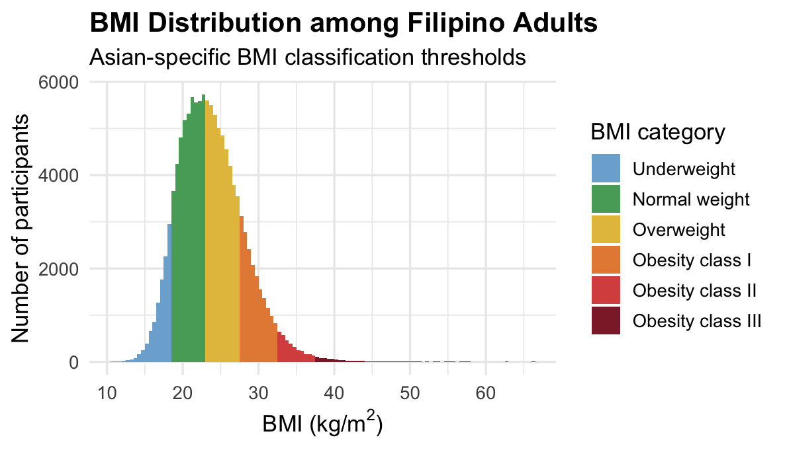
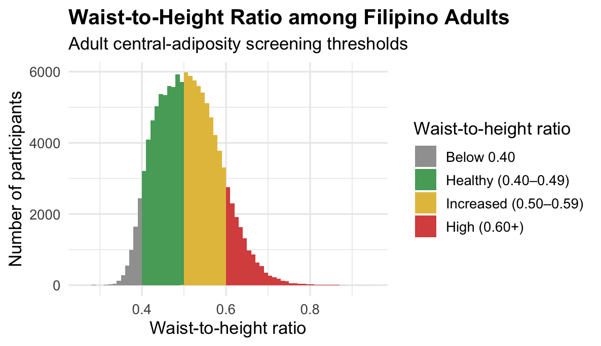
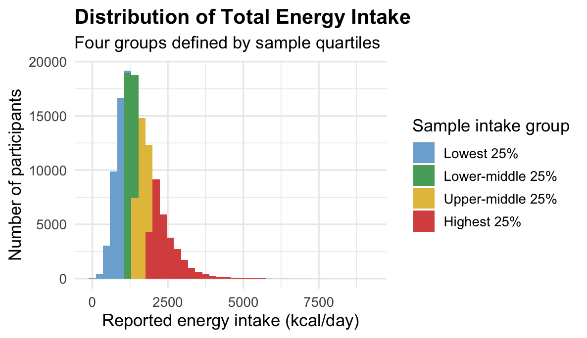
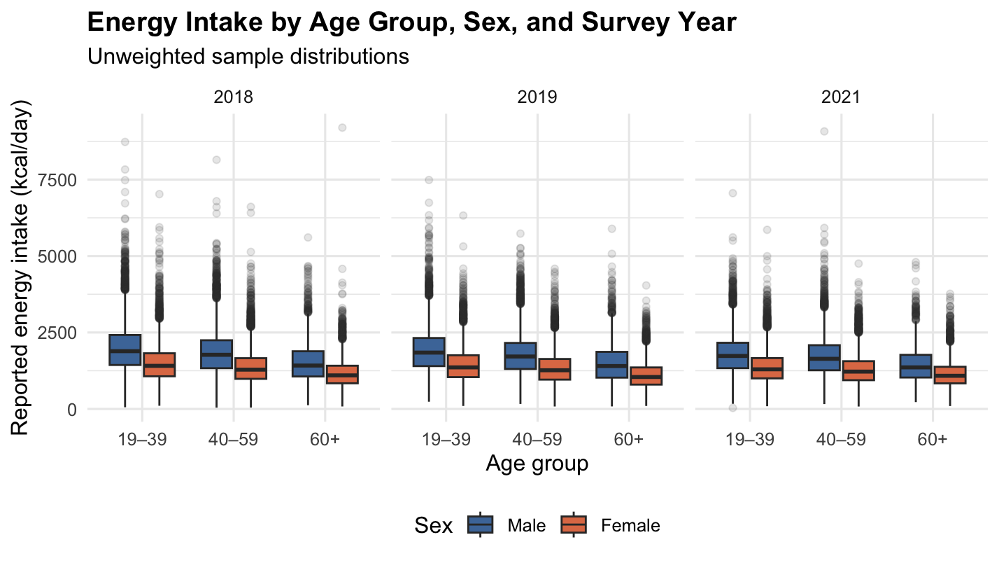
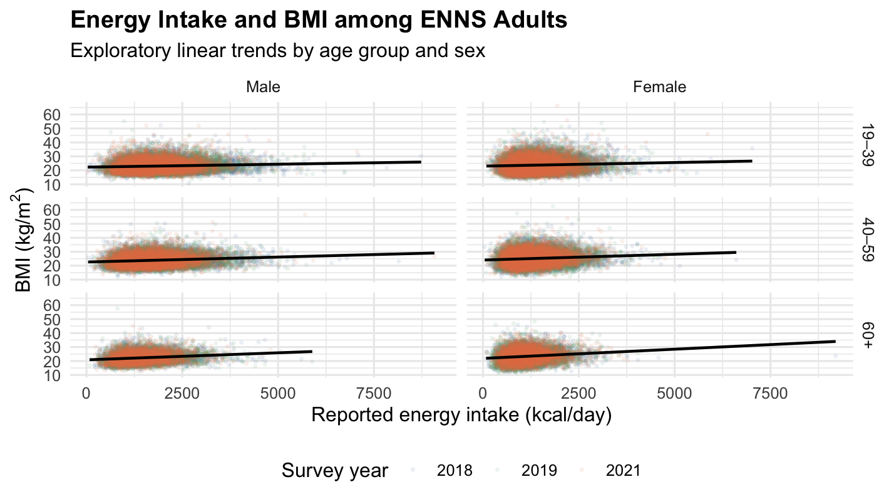
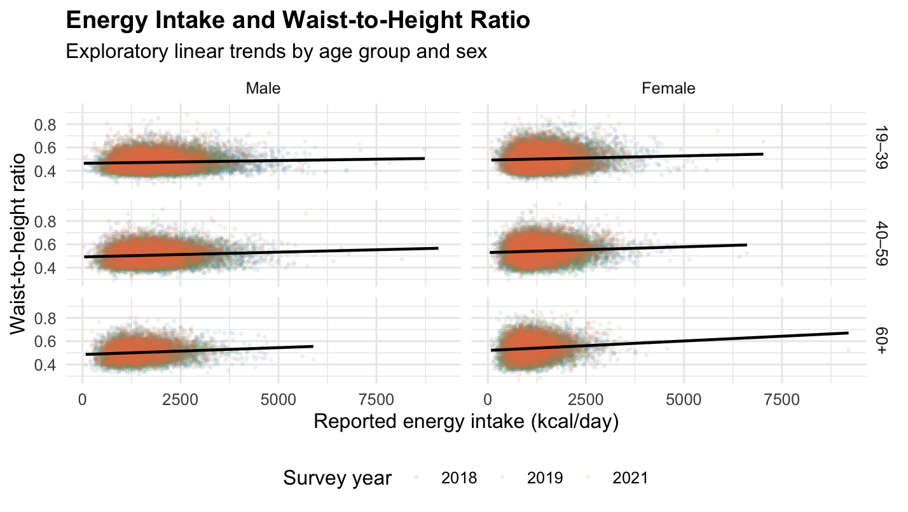
Table 6Preliminary unweighted energy slopes (per 500 kcal), all three years together.Each cell is the slope from an ordinary linear regression of the outcome on energy × (sex + age group), adjusted for survey year, without survey weights, with its 95% CI. These models ignore the survey design and are shown only for comparison with the survey-weighted results that follow.
| Group | BMI (kg/m²) | WHtR | SBP (mmHg) | DBP (mmHg) | FBS (mg/dL) |
|---|---|---|---|---|---|
| Men 19–39 | 0.27 (0.24 to 0.30) | 0.0036 (0.0031 to 0.0041) | 0.70 (0.57 to 0.83) | 0.43 (0.35 to 0.51) | 0.53 (0.18 to 0.87) |
| Men 40–59 | 0.33 (0.29 to 0.36) | 0.0041 (0.0035 to 0.0046) | −0.08 (−0.22 to 0.06) | 0.13 (0.04 to 0.22) | 0.40 (0.04 to 0.77) |
| Men 60+ | 0.54 (0.48 to 0.59) | 0.0061 (0.0053 to 0.0070) | −0.16 (−0.37 to 0.06) | 0.33 (0.20 to 0.47) | 0.87 (0.33 to 1.42) |
| Women 19–39 | 0.31 (0.27 to 0.35) | 0.0043 (0.0037 to 0.0050) | 0.10 (−0.06 to 0.26) | 0.07 (−0.03 to 0.18) | 0.69 (0.28 to 1.10) |
| Women 40–59 | 0.37 (0.33 to 0.40) | 0.0048 (0.0042 to 0.0054) | −0.68 (−0.84 to −0.52) | −0.23 (−0.33 to −0.13) | 0.57 (0.16 to 0.97) |
| Women 60+ | 0.57 (0.52 to 0.63) | 0.0069 (0.0060 to 0.0077) | −0.76 (−0.97 to −0.54) | −0.02 (−0.16 to 0.12) | 1.04 (0.49 to 1.59) |
The directions match the survey-weighted slopes in Tables 8 and 11A–11D: BMI and WHtR rise with reported energy in every group and most steeply in adults 60+, and SBP rises in young men but falls in women 40+. The intervals here are narrower only because these models ignore the survey design and pool three years, so the survey-weighted results are the ones to report.
Survey-weighted results: total energy intake
Table 7Survey-weighted model of BMI on energy intake, 2018.Table 7 shows the 2018 model, where the reference group is men aged 19–39. In this group, adults who reported 500 kcal more had a BMI 0.20 higher, on average. The slope was not clearly different for women, or for ages 40–59, but it was steeper for ages 60 and over.
| Term | Estimate | SE | p |
|---|---|---|---|
| Intercept | 22.227 | 0.146 | <0.001 |
| Energy (per 500 kcal), men 19–39 | 0.204 | 0.037 | <0.001 |
| Women (vs men) | 1.113 | 0.168 | <0.001 |
| Age 40–59 (vs 19–39) | 1.054 | 0.174 | <0.001 |
| Age 60+ (vs 19–39) | −1.010 | 0.217 | <0.001 |
| Energy × women | 0.020 | 0.050 | 0.687 |
| Energy × age 40–59 | 0.047 | 0.049 | 0.329 |
| Energy × age 60+ | 0.259 | 0.070 | <0.001 |
The rows that start with "Energy" describe how steeply BMI rises with reported intake; the other rows describe how high BMI sits. The Age 60+ value of −1.010 is the BMI difference at 0 kcal, a point no one reports, so it is not a finding on its own. At 1,500 kcal, men 60+ had a predicted BMI of 22.6, against 22.8 in men 19–39; at 2,800 kcal it was 23.8 against 23.4. So older men who reported little food had a lower BMI than young men, and the gap closed and reversed as reported intake rose. Figure 8 shows this as lines.
Table 8BMI slope per 500 kcal by sex and age group, each year.Table 8 gives the energy slope for each of the six sex and age groups, with 95% confidence intervals. In all three years, higher reported energy was linked to higher BMI in every group, and every interval was above zero. Slopes ranged from 0.20 to 0.63 BMI units per 500 kcal, and were largest in adults aged 60 and over in 2018 and 2019.
| Group | 2018 | 2019 | 2021 |
|---|---|---|---|
| Men 19–39 | 0.204 (0.131 to 0.276) | 0.236 (0.168 to 0.305) | 0.347 (0.245 to 0.449) |
| Men 40–59 | 0.251 (0.167 to 0.335) | 0.372 (0.292 to 0.452) | 0.348 (0.250 to 0.447) |
| Men 60+ | 0.463 (0.332 to 0.593) | 0.626 (0.506 to 0.747) | 0.490 (0.363 to 0.617) |
| Women 19–39 | 0.224 (0.124 to 0.323) | 0.215 (0.119 to 0.311) | 0.337 (0.212 to 0.463) |
| Women 40–59 | 0.271 (0.177 to 0.365) | 0.350 (0.257 to 0.444) | 0.338 (0.229 to 0.448) |
| Women 60+ | 0.483 (0.349 to 0.616) | 0.605 (0.476 to 0.734) | 0.480 (0.334 to 0.626) |
Among adults 60+, people who reported 500 kcal more had a BMI about 0.5–0.6 higher; among adults 19–39 the difference was about 0.2–0.35. For a person 155 cm tall, that is about 1.2–1.4 kg compared with 0.5–0.8 kg. This does not show that older adults gain more weight from extra calories. The data compare different people at one time, not the same person eating more. It shows that BMI differs more between low and high reporters in older age. One possible reason, not tested here: older adults who eat very little are often thin because of illness, poor appetite, or dental problems, which pulls BMI down at the low-intake end (Figure 8).
Table 9Do the BMI–energy slopes differ by sex or age group?Table 9 gives one overall test for each question. There was no clear evidence that the slope differs between men and women in any year. The slope differed by age group in 2018 and 2019, but not clearly in 2021.
| Year | n | p, sex interaction | p, age interaction |
|---|---|---|---|
| 2018 | 40,645 | 0.687 | 0.001 |
| 2019 | 42,444 | 0.651 | <0.001 |
| 2021 | 37,838 | 0.876 | 0.103 |
The small p-values for age (0.001 in 2018, <0.001 in 2019) mean the steeper slope in older adults is unlikely to be chance in those years. The large p-values for sex mean men and women had about the same BMI slope. In 2021 the age difference was smaller and could be chance.
Table 10Do the energy slopes differ by sex or age group for WHtR, SBP, DBP, and FBS?Table 10 gives the same overall tests for the other four outcomes. For WHtR the pattern matches BMI: an age difference in 2019 (and borderline in 2018), and no sex difference. For SBP the slope differed by age in all three years, and by sex in 2019 and 2021. For DBP the slope differed by sex in 2019 and 2021, while the age tests were weak. For FBS there was little clear evidence of any difference; the one small p-value (sex, 2018) did not repeat. With about 30 tests, a few p-values near 0.03–0.05 can appear by chance, so results that repeat across years deserve more trust.
| Outcome | Year | n | p, sex | p, age |
|---|---|---|---|---|
| WHtR | 2018 | 40,608 | 0.335 | 0.049 |
| 2019 | 42,426 | 0.328 | <0.001 | |
| 2021 | 37,820 | 0.954 | 0.551 | |
| SBP | 2018 | 40,667 | 0.095 | <0.001 |
| 2019 | 42,443 | 0.001 | <0.001 | |
| 2021 | 37,826 | 0.009 | 0.003 | |
| DBP | 2018 | 40,667 | 0.242 | 0.070 |
| 2019 | 42,443 | 0.005 | 0.035 | |
| 2021 | 37,826 | 0.001 | 0.278 | |
| FBS | 2018 | 25,446 | 0.025 | 0.471 |
| 2019 | 32,043 | 0.306 | 0.202 | |
| 2021 | 11,076 | 0.399 | 0.228 |
For WHtR, the energy link changes with age much like BMI. For blood pressure, it changes with both sex and age: positive in young men, flat or negative in older women (Tables 11B–11C). For FBS, the link looks about the same in every group.
Table 11AWHtR slope per 500 kcal by sex and age group, each year.Table 11A shows that higher reported energy was linked to a higher WHtR in every group and every year, because every interval was above zero. Slopes ranged from about 0.002 to 0.008. For a person 160 cm tall, that is roughly 0.3 to 1.3 cm of waist per 500 kcal. In 2018 and 2019 the slopes were steepest in adults aged 60 and over. In 2021 they were similar across ages.
| Group | 2018 | 2019 | 2021 |
|---|---|---|---|
| Men 19–39 | 0.0022 (0.0010 to 0.0033) | 0.0032 (0.0021 to 0.0043) | 0.0047 (0.0031 to 0.0063) |
| Men 40–59 | 0.0032 (0.0019 to 0.0046) | 0.0051 (0.0039 to 0.0064) | 0.0045 (0.0029 to 0.0060) |
| Men 60+ | 0.0049 (0.0027 to 0.0070) | 0.0083 (0.0062 to 0.0103) | 0.0058 (0.0036 to 0.0080) |
| Women 19–39 | 0.0029 (0.0014 to 0.0045) | 0.0025 (0.0010 to 0.0040) | 0.0048 (0.0029 to 0.0066) |
| Women 40–59 | 0.0040 (0.0025 to 0.0055) | 0.0044 (0.0028 to 0.0059) | 0.0045 (0.0028 to 0.0062) |
| Women 60+ | 0.0056 (0.0034 to 0.0079) | 0.0075 (0.0054 to 0.0096) | 0.0059 (0.0035 to 0.0083) |
At the same height, adults who reported more food on the recall day had slightly larger waists, in every group. As with BMI, the difference between low and high reporters was largest in adults 60+.
Table 11BSystolic blood pressure slope (mmHg) per 500 kcal by sex and age group, each year.Table 11B shows that the SBP slope depends on sex and age. Young men (19–39) had positive slopes of about 0.5 to 0.8 mmHg in all three years. Women aged 40 and over had negative slopes (about −0.4 to −1.2 mmHg), and several of those intervals were below zero. Men aged 40 and over were mostly near zero. A negative slope does not mean that eating more lowers blood pressure; recall-day intake is a noisy measure of usual intake, and people with high blood pressure may eat differently.
| Group | 2018 | 2019 | 2021 |
|---|---|---|---|
| Men 19–39 | 0.61 (0.38 to 0.83) | 0.46 (0.21 to 0.71) | 0.79 (0.37 to 1.20) |
| Men 40–59 | −0.11 (−0.46 to 0.24) | −0.26 (−0.62 to 0.10) | 0.18 (−0.28 to 0.64) |
| Men 60+ | −0.09 (−0.86 to 0.68) | −0.65 (−1.18 to −0.12) | 0.08 (−0.56 to 0.72) |
| Women 19–39 | 0.29 (−0.03 to 0.61) | −0.12 (−0.44 to 0.19) | −0.06 (−0.43 to 0.31) |
| Women 40–59 | −0.43 (−0.77 to −0.09) | −0.85 (−1.21 to −0.48) | −0.67 (−1.12 to −0.22) |
| Women 60+ | −0.41 (−1.29 to 0.47) | −1.24 (−1.77 to −0.71) | −0.77 (−1.48 to −0.06) |
Young men who reported 500 kcal more had SBP about 0.5–0.8 mmHg higher. Women 40+ who reported more had SBP about 0.4–1.2 mmHg lower. Both differences are small next to the 20 mmHg between normal (below 120) and high (140 or more) SBP. In Figure 8, the lines for older women slope slightly down but sit about 20 mmHg above those for young women, so older women still have much higher blood pressure overall.
Table 11CDiastolic blood pressure slope (mmHg) per 500 kcal by sex and age group, each year.Table 11C shows a smaller version of the SBP pattern. Young men had positive slopes of about 0.35 to 0.47 mmHg, with intervals above zero in all three years. Women aged 40–59 had slightly negative slopes in 2019 and 2021. Other groups were close to zero.
| Group | 2018 | 2019 | 2021 |
|---|---|---|---|
| Men 19–39 | 0.37 (0.18 to 0.55) | 0.35 (0.16 to 0.55) | 0.47 (0.22 to 0.72) |
| Men 40–59 | 0.08 (−0.13 to 0.30) | 0.00 (−0.25 to 0.24) | 0.23 (−0.08 to 0.54) |
| Men 60+ | 0.25 (−0.13 to 0.64) | 0.21 (−0.12 to 0.54) | 0.37 (0.02 to 0.72) |
| Women 19–39 | 0.22 (−0.01 to 0.45) | 0.02 (−0.21 to 0.25) | −0.03 (−0.29 to 0.22) |
| Women 40–59 | −0.06 (−0.29 to 0.16) | −0.33 (−0.57 to −0.09) | −0.27 (−0.52 to −0.02) |
| Women 60+ | 0.11 (−0.31 to 0.52) | −0.12 (−0.45 to 0.22) | −0.14 (−0.51 to 0.24) |
Young men who reported more food had slightly higher DBP, about 0.4 mmHg per 500 kcal; women 40–59 who reported more had slightly lower DBP. All of these differences are under 1 mmHg.
Table 11DFasting blood sugar slope (mg/dL) per 500 kcal by sex and age group, each year.Table 11D shows that most FBS slopes were positive, about 0.1 to 2.9 mg/dL per 500 kcal. All six groups were positive in 2019 and 2021, but 2018 was mixed. The intervals are wide and many include zero, which fits the weak tests in Table 10.
| Group | 2018 | 2019 | 2021 |
|---|---|---|---|
| Men 19–39 | 0.10 (−0.54 to 0.74) | 0.40 (−0.08 to 0.89) | 1.13 (0.26 to 2.00) |
| Men 40–59 | −0.45 (−1.29 to 0.39) | 1.16 (0.30 to 2.02) | 0.91 (−0.65 to 2.48) |
| Men 60+ | −0.55 (−1.84 to 0.73) | 1.02 (−0.23 to 2.27) | 2.94 (0.78 to 5.10) |
| Women 19–39 | 1.17 (0.14 to 2.21) | 0.89 (0.07 to 1.70) | 0.47 (−0.69 to 1.63) |
| Women 40–59 | 0.63 (−0.31 to 1.56) | 1.64 (0.58 to 2.71) | 0.24 (−1.79 to 2.28) |
| Women 60+ | 0.52 (−0.77 to 1.81) | 1.50 (0.14 to 2.86) | 2.27 (0.07 to 4.47) |
In 2019 and 2021, adults who reported more food tended to have slightly higher fasting blood sugar, about 0.2–2.9 mg/dL per 500 kcal. Many intervals include zero, so for most single groups the data cannot rule out no difference. For scale, normal FBS (below 100 mg/dL) and the diabetes range (126 mg/dL or more) are 26 mg/dL apart [6].
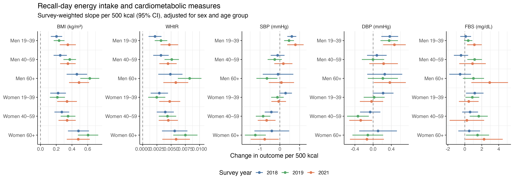
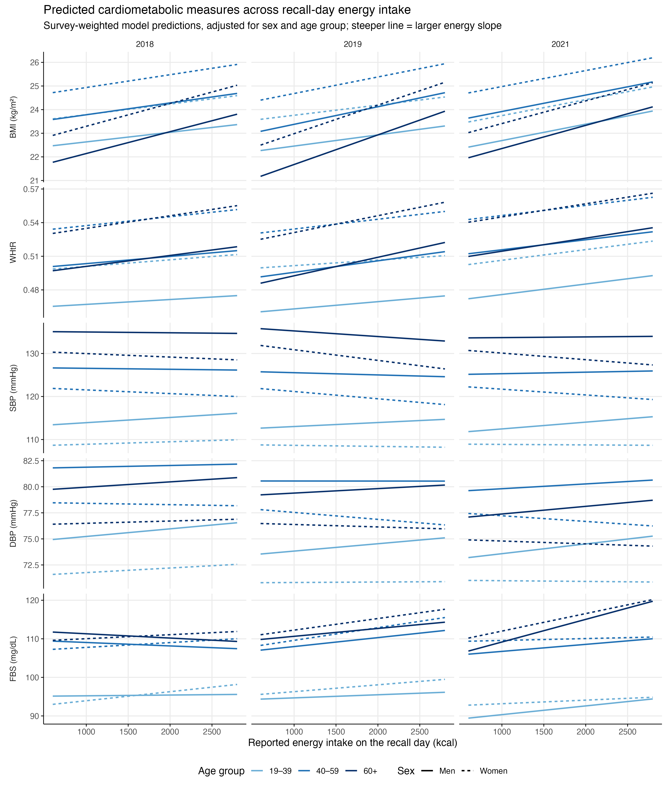
Survey-weighted results: macronutrient share
Table 12Do the protein and fat share slopes differ by sex or age group?Table 12 gives overall tests from models that include energy, protein share, and fat share together, with carbohydrate as the comparison. The fat share slope differed by sex for BMI, WHtR, SBP, and DBP in all three years (p ≤ 0.004), and for FBS in 2019 and 2021. It differed by age group for BMI in all three years, and for WHtR, SBP, DBP, and FBS in some years. The protein share slope differed by sex for BMI and WHtR in all three years, and for SBP and DBP in some years. It differed by age group only for FBS in 2019. These tests show only that slopes differ, not in which direction; the slopes themselves are in Table 13. A p-value shown as <0.0001 means it was below 0.0001. As in Table 10, p-values near 0.03–0.05 should be treated as weak hints.
| Outcome | Year | n | Fat: p, sex | Fat: p, age | Protein: p, sex | Protein: p, age |
|---|---|---|---|---|---|---|
| BMI | 2018 | 40,645 | 0.0004 | 0.0044 | 0.0101 | 0.995 |
| 2019 | 42,444 | 0.004 | 0.0188 | 0.0436 | 0.794 | |
| 2021 | 37,838 | <0.0001 | 0.0008 | 0.0002 | 0.804 | |
| WHtR | 2018 | 40,608 | <0.0001 | 0.0023 | 0.0089 | 0.631 |
| 2019 | 42,426 | <0.0001 | 0.338 | 0.0188 | 0.310 | |
| 2021 | 37,820 | <0.0001 | <0.0001 | 0.0001 | 0.544 | |
| SBP | 2018 | 40,667 | 0.0004 | 0.0514 | 0.0003 | 0.196 |
| 2019 | 42,443 | 0.0002 | 0.0132 | 0.0964 | 0.350 | |
| 2021 | 37,826 | 0.0007 | 0.0323 | 0.118 | 0.753 | |
| DBP | 2018 | 40,667 | 0.0013 | 0.0039 | 0.0013 | 0.445 |
| 2019 | 42,443 | <0.0001 | 0.0575 | 0.016 | 0.150 | |
| 2021 | 37,826 | <0.0001 | 0.131 | 0.204 | 0.413 | |
| FBS | 2018 | 25,446 | 0.122 | 0.360 | 0.717 | 0.493 |
| 2019 | 32,043 | 0.0414 | <0.0001 | 0.314 | 0.0138 | |
| 2021 | 11,076 | 0.0002 | 0.0036 | 0.712 | 0.0718 |
In nearly every year, the link between fat share and most outcomes was not the same in men and women. Table 13 and Figure 9 show the direction: the slopes are larger in men.
Table 13Protein and fat share slopes by sex, age group, and year (survey-weighted).Each cell is the change in the outcome for +5 percentage points of recall-day energy from protein (or fat) instead of carbohydrate, at the same total energy and the same share of the other nutrient, with its 95% CI. Models are from Table 12 and are adjusted only for sex and age group. Across outcomes, higher protein and fat shares go with higher BMI, WHtR, DBP and (fat) FBS mainly in men; in women the slopes are smaller, often near zero, and sometimes negative. Trust patterns that repeat across years more than single cells.
+5 percentage points is a modest swap. On a 1,500 kcal day it moves 75 kcal from carbohydrate to protein (about 19 g of protein) or to fat (about 8 g of fat), with total energy unchanged. A protein slope of 0.42 for BMI means that, among people reporting the same total energy, those whose energy came 5 points more from protein (for example 18% instead of 13%) had a BMI 0.42 higher on average.
Table 13AProtein and fat share slopes for BMI (kg/m²).
| Exposure | Group | 2018 | 2019 | 2021 |
|---|---|---|---|---|
| Protein +5 pts | Men 19–39 | 0.42 (0.29 to 0.56) | 0.37 (0.23 to 0.51) | 0.46 (0.32 to 0.60) |
| Men 40–59 | 0.43 (0.28 to 0.57) | 0.37 (0.24 to 0.50) | 0.50 (0.36 to 0.65) | |
| Men 60+ | 0.43 (0.25 to 0.62) | 0.43 (0.26 to 0.60) | 0.52 (0.35 to 0.69) | |
| Women 19–39 | 0.23 (0.08 to 0.38) | 0.23 (0.09 to 0.37) | 0.18 (0.03 to 0.33) | |
| Women 40–59 | 0.23 (0.09 to 0.37) | 0.23 (0.10 to 0.37) | 0.23 (0.09 to 0.36) | |
| Women 60+ | 0.24 (0.06 to 0.42) | 0.29 (0.13 to 0.45) | 0.24 (0.08 to 0.41) | |
| Fat +5 pts | Men 19–39 | 0.19 (0.14 to 0.25) | 0.21 (0.15 to 0.26) | 0.21 (0.14 to 0.29) |
| Men 40–59 | 0.31 (0.24 to 0.38) | 0.27 (0.21 to 0.34) | 0.33 (0.26 to 0.40) | |
| Men 60+ | 0.29 (0.20 to 0.39) | 0.14 (0.06 to 0.23) | 0.36 (0.27 to 0.44) | |
| Women 19–39 | 0.07 (0.01 to 0.13) | 0.11 (0.05 to 0.18) | −0.01 (−0.08 to 0.05) | |
| Women 40–59 | 0.19 (0.12 to 0.25) | 0.18 (0.12 to 0.24) | 0.11 (0.04 to 0.17) | |
| Women 60+ | 0.17 (0.09 to 0.26) | 0.05 (−0.03 to 0.13) | 0.13 (0.05 to 0.22) |
Both shares go with higher BMI in almost every group and year. The protein slope in men (0.37–0.52) is about twice that in women (0.18–0.29). The fat slope is also larger in men; in women 19–39 it is near zero in 2021.
At the same total energy, men whose energy came more from protein or fat and less from carbohydrate had a higher BMI. In women the difference was about half as large.
Table 13BProtein and fat share slopes for waist-to-height ratio.
| Exposure | Group | 2018 | 2019 | 2021 |
|---|---|---|---|---|
| Protein +5 pts | Men 19–39 | 0.0067 (0.0045 to 0.0090) | 0.0051 (0.0028 to 0.0073) | 0.0061 (0.0037 to 0.0085) |
| Men 40–59 | 0.0068 (0.0045 to 0.0091) | 0.0062 (0.0039 to 0.0085) | 0.0076 (0.0053 to 0.0098) | |
| Men 60+ | 0.0083 (0.0051 to 0.0115) | 0.0077 (0.0048 to 0.0106) | 0.0073 (0.0045 to 0.0101) | |
| Women 19–39 | 0.0035 (0.0012 to 0.0058) | 0.0023 (−0.0001 to 0.0047) | 0.0016 (−0.0007 to 0.0039) | |
| Women 40–59 | 0.0036 (0.0014 to 0.0058) | 0.0034 (0.0011 to 0.0057) | 0.0030 (0.0010 to 0.0051) | |
| Women 60+ | 0.0051 (0.0020 to 0.0081) | 0.0049 (0.0020 to 0.0078) | 0.0028 (0.0000 to 0.0055) | |
| Fat +5 pts | Men 19–39 | 0.0039 (0.0029 to 0.0048) | 0.0041 (0.0031 to 0.0050) | 0.0040 (0.0028 to 0.0052) |
| Men 40–59 | 0.0057 (0.0046 to 0.0068) | 0.0046 (0.0035 to 0.0057) | 0.0062 (0.0050 to 0.0073) | |
| Men 60+ | 0.0057 (0.0043 to 0.0072) | 0.0035 (0.0020 to 0.0049) | 0.0077 (0.0062 to 0.0091) | |
| Women 19–39 | 0.0009 (0.0000 to 0.0019) | 0.0015 (0.0004 to 0.0026) | −0.0012 (−0.0022 to −0.0002) | |
| Women 40–59 | 0.0028 (0.0018 to 0.0038) | 0.0020 (0.0011 to 0.0030) | 0.0010 (0.0000 to 0.0020) | |
| Women 60+ | 0.0028 (0.0014 to 0.0042) | 0.0009 (−0.0004 to 0.0023) | 0.0025 (0.0010 to 0.0040) |
The pattern matches BMI: positive in nearly every group, and about twice as steep in men for both shares. The one negative slope is fat share in women 19–39 in 2021.
The waist results agree with BMI. People with a higher protein or fat share were not only heavier but also carried more weight around the waist, and more so in men.
Table 13CProtein and fat share slopes for systolic BP (mmHg).
| Exposure | Group | 2018 | 2019 | 2021 |
|---|---|---|---|---|
| Protein +5 pts | Men 19–39 | 0.85 (0.33 to 1.38) | 0.35 (−0.11 to 0.81) | 1.07 (0.49 to 1.65) |
| Men 40–59 | 1.49 (0.82 to 2.15) | 0.80 (0.20 to 1.40) | 1.05 (0.33 to 1.77) | |
| Men 60+ | 0.91 (0.01 to 1.81) | 0.44 (−0.39 to 1.27) | 0.72 (−0.33 to 1.77) | |
| Women 19–39 | −0.32 (−0.80 to 0.17) | −0.13 (−0.58 to 0.32) | 0.47 (−0.07 to 1.02) | |
| Women 40–59 | 0.32 (−0.36 to 1.00) | 0.32 (−0.25 to 0.89) | 0.45 (−0.12 to 1.02) | |
| Women 60+ | −0.26 (−1.11 to 0.59) | −0.04 (−0.86 to 0.77) | 0.12 (−0.68 to 0.92) | |
| Fat +5 pts | Men 19–39 | 0.02 (−0.18 to 0.22) | 0.10 (−0.11 to 0.31) | −0.04 (−0.28 to 0.21) |
| Men 40–59 | 0.37 (0.09 to 0.65) | 0.49 (0.24 to 0.75) | 0.30 (−0.01 to 0.60) | |
| Men 60+ | 0.07 (−0.30 to 0.43) | 0.38 (−0.04 to 0.81) | 0.35 (−0.08 to 0.77) | |
| Women 19–39 | −0.41 (−0.60 to −0.22) | −0.38 (−0.57 to −0.19) | −0.57 (−0.78 to −0.36) | |
| Women 40–59 | −0.06 (−0.33 to 0.20) | 0.01 (−0.24 to 0.25) | −0.23 (−0.50 to 0.03) | |
| Women 60+ | −0.37 (−0.72 to −0.02) | −0.10 (−0.49 to 0.30) | −0.19 (−0.67 to 0.30) |
Protein share goes with higher SBP in men under 60 in most years (0.80–1.49; men 19–39 in 2019 is not clear); in women the intervals cross zero. Fat share is positive only in men 40–59 (2018, 2019), and negative in women 19–39 in all three years (−0.38 to −0.57).
In men under 60, a higher protein share went with slightly higher SBP, about 1 mmHg per 5 points. In young women, a higher fat share went with slightly lower SBP, about 0.4–0.6 mmHg. The two go in opposite directions for men and women, which is why Table 12 found sex differences.
Table 13DProtein and fat share slopes for diastolic BP (mmHg).
| Exposure | Group | 2018 | 2019 | 2021 |
|---|---|---|---|---|
| Protein +5 pts | Men 19–39 | 0.58 (0.20 to 0.96) | 0.19 (−0.16 to 0.53) | 0.62 (0.20 to 1.04) |
| Men 40–59 | 0.85 (0.44 to 1.26) | 0.59 (0.22 to 0.97) | 0.43 (−0.06 to 0.92) | |
| Men 60+ | 0.56 (0.06 to 1.06) | 0.31 (−0.18 to 0.80) | 0.20 (−0.42 to 0.82) | |
| Women 19–39 | −0.07 (−0.44 to 0.30) | −0.26 (−0.59 to 0.07) | 0.31 (−0.11 to 0.73) | |
| Women 40–59 | 0.20 (−0.19 to 0.59) | 0.15 (−0.20 to 0.50) | 0.12 (−0.24 to 0.48) | |
| Women 60+ | −0.09 (−0.57 to 0.39) | −0.13 (−0.59 to 0.33) | −0.11 (−0.59 to 0.36) | |
| Fat +5 pts | Men 19–39 | 0.31 (0.15 to 0.46) | 0.42 (0.26 to 0.58) | 0.40 (0.21 to 0.60) |
| Men 40–59 | 0.50 (0.32 to 0.69) | 0.50 (0.33 to 0.68) | 0.59 (0.39 to 0.79) | |
| Men 60+ | 0.10 (−0.11 to 0.32) | 0.21 (−0.02 to 0.44) | 0.40 (0.16 to 0.65) | |
| Women 19–39 | 0.03 (−0.11 to 0.17) | −0.03 (−0.17 to 0.11) | −0.17 (−0.32 to −0.03) | |
| Women 40–59 | 0.23 (0.07 to 0.40) | 0.05 (−0.11 to 0.22) | 0.01 (−0.16 to 0.19) | |
| Women 60+ | −0.17 (−0.38 to 0.04) | −0.25 (−0.46 to −0.03) | −0.18 (−0.45 to 0.10) |
Fat share goes with higher DBP in men 19–59 in all three years (0.31–0.59), and in men 60+ in 2021. In women the fat slopes are near zero or slightly negative. Protein share is positive in men in some years.
Men under 60 whose energy came more from fat had DBP about 0.3–0.6 mmHg higher. In women there was little or no difference.
Table 13EProtein and fat share slopes for FBS (mg/dL).
| Exposure | Group | 2018 | 2019 | 2021 |
|---|---|---|---|---|
| Protein +5 pts | Men 19–39 | 0.38 (−0.81 to 1.58) | 0.51 (−0.49 to 1.50) | 0.16 (−1.33 to 1.64) |
| Men 40–59 | 1.01 (−0.68 to 2.71) | 2.51 (1.09 to 3.92) | 1.90 (−0.06 to 3.86) | |
| Men 60+ | 1.59 (−1.00 to 4.18) | 2.23 (0.16 to 4.29) | 2.59 (0.11 to 5.08) | |
| Women 19–39 | 0.08 (−0.95 to 1.11) | −0.17 (−1.08 to 0.75) | −0.21 (−1.54 to 1.12) | |
| Women 40–59 | 0.71 (−1.01 to 2.43) | 1.83 (0.39 to 3.27) | 1.54 (−0.93 to 4.00) | |
| Women 60+ | 1.29 (−0.87 to 3.45) | 1.55 (−0.33 to 3.43) | 2.23 (−0.15 to 4.61) | |
| Fat +5 pts | Men 19–39 | 0.27 (−0.17 to 0.70) | 0.63 (0.20 to 1.06) | 1.10 (0.44 to 1.76) |
| Men 40–59 | 0.65 (0.02 to 1.28) | 1.86 (1.21 to 2.51) | 1.70 (0.72 to 2.69) | |
| Men 60+ | 0.72 (−0.11 to 1.55) | 2.92 (1.91 to 3.93) | 3.15 (1.82 to 4.48) | |
| Women 19–39 | −0.21 (−0.71 to 0.29) | 0.02 (−0.33 to 0.38) | −0.53 (−1.00 to −0.06) | |
| Women 40–59 | 0.17 (−0.45 to 0.79) | 1.25 (0.60 to 1.90) | 0.07 (−0.97 to 1.12) | |
| Women 60+ | 0.24 (−0.55 to 1.03) | 2.31 (1.35 to 3.28) | 1.52 (0.32 to 2.73) |
Fat share goes with higher FBS in men in 2019 and 2021, most in men 60+ (2.92 and 3.15 mg/dL), and in women 60+ in those years. In 2018 most intervals cross zero. Protein intervals are wide; clear positive slopes appear only in men 40+ and women 40–59 in some years.
In 2019 and 2021, older adults whose energy came more from fat had higher fasting blood sugar, about 3 mg/dL per 5 points in men 60+ and 1.5–2.3 mg/dL in women 60+. Because 2018 did not show this, treat it as a pattern to check, not a settled result.
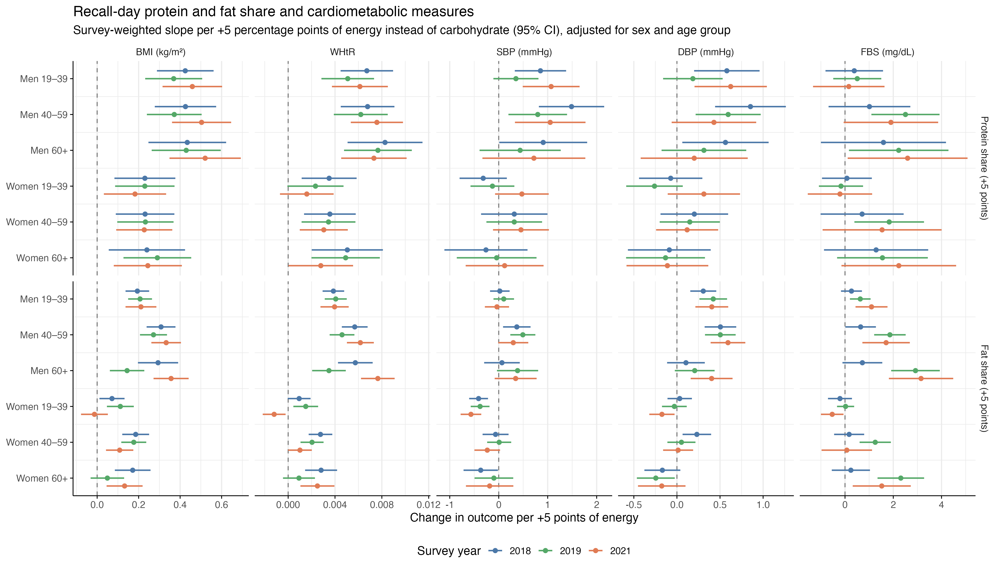
Survey-weighted models: triglycerides and HDL
The clearest lipid result is that a higher fat share went with higher HDL in every sex and age group. Triglyceride links appeared mainly in men. These models are the same as for the other outcomes: one survey design per year, adjusted only for sex and age group. Lipids were measured in about half of households in 54 provinces/HUCs, so fewer adults have results: 5,172 in 2018, 22,839 in 2019, and 11,292 in 2021. Read 2018 with care. The codebook gives no units for triglycerides or HDL; the values fit mg/dL, which is assumed here.
Table 14Do the triglyceride and HDL slopes differ by sex or age group?Each cell is the p-value of an overall test: does the slope for that exposure differ between men and women (Sex), or between the three age groups (Age group)? Bold = p < 0.05. Energy tests come from the energy-only model (as in Tables 9–10); protein and fat tests come from the model with energy, protein, and fat together (as in Table 12).
| Outcome | Exposure | Slope differs by | 2018 | 2019 | 2021 |
|---|---|---|---|---|---|
| Triglycerides | Energy +500 kcal | Sex | 0.706 | 0.002 | 0.312 |
| Age group | 0.038 | 0.135 | <0.001 | ||
| Protein +5 pts | Sex | 0.378 | 0.524 | 0.007 | |
| Age group | 0.108 | 0.266 | 0.603 | ||
| Fat +5 pts | Sex | 0.375 | <0.001 | 0.012 | |
| Age group | 0.647 | 0.979 | 0.002 | ||
| HDL | Energy +500 kcal | Sex | 0.567 | 0.605 | 0.863 |
| Age group | 0.691 | 0.330 | 0.821 | ||
| Protein +5 pts | Sex | 0.073 | 0.114 | 0.730 | |
| Age group | 0.175 | 0.664 | 0.874 | ||
| Fat +5 pts | Sex | 0.018 | 0.002 | 0.001 | |
| Age group | 0.177 | 0.396 | 0.077 |
Two differences repeat across years. The fat share slope for HDL differed by sex in all three years, and the fat share slope for triglycerides differed by sex in 2019 and 2021. The energy slope for triglycerides differed by age group in 2018 and 2021. HDL slopes for energy and protein showed no clear differences. As in Table 10, single p-values near 0.01–0.05 that do not repeat are weak hints.
How fat share relates to HDL and triglycerides depends on sex, and how energy relates to triglycerides depends on age. Table 15 and Figures 10–11 show the direction of each difference.
Table 15Energy, protein, and fat slopes for triglycerides and HDL, by sex, age group, and year (survey-weighted).Each cell is the change in the outcome (mg/dL), with its 95% CI, for one step up in intake. Energy step = +500 kcal (energy-only model, as in Table 11). Protein or fat step = +5 percentage points of recall-day energy from that nutrient instead of carbohydrate, at the same total energy (as in Table 13). Bold = the 95% CI does not include zero.
Table 15ATriglycerides (mg/dL).
| Exposure | Group | 2018 | 2019 | 2021 |
|---|---|---|---|---|
| Energy +500 kcal | Men 19–39 | 3.80 (−2.25 to 9.84) | 5.99 (3.51 to 8.47) | 8.04 (4.34 to 11.74) |
| Men 40–59 | 7.73 (−7.15 to 22.60) | 8.33 (4.59 to 12.07) | 5.92 (1.07 to 10.76) | |
| Men 60+ | −7.56 (−18.95 to 3.83) | 2.26 (−3.43 to 7.95) | −0.94 (−4.85 to 2.96) | |
| Women 19–39 | 2.04 (−4.62 to 8.70) | 1.10 (−1.47 to 3.66) | 5.81 (2.13 to 9.49) | |
| Women 40–59 | 5.97 (−2.29 to 14.22) | 3.44 (−0.09 to 6.97) | 3.68 (−0.70 to 8.07) | |
| Women 60+ | −9.32 (−18.31 to −0.33) | −2.63 (−7.58 to 2.32) | −3.17 (−7.28 to 0.93) | |
| Protein +5 pts | Men 19–39 | 6.21 (−4.30 to 16.72) | 3.11 (−1.86 to 8.08) | 9.33 (2.43 to 16.23) |
| Men 40–59 | 13.02 (−3.07 to 29.11) | 6.46 (0.32 to 12.61) | 9.77 (1.83 to 17.71) | |
| Men 60+ | −8.02 (−28.85 to 12.81) | 1.01 (−5.03 to 7.05) | 5.86 (−1.70 to 13.42) | |
| Women 19–39 | 0.20 (−9.02 to 9.42) | 1.30 (−3.23 to 5.82) | −0.26 (−4.72 to 4.21) | |
| Women 40–59 | 7.01 (−1.61 to 15.63) | 4.65 (0.26 to 9.03) | 0.18 (−5.79 to 6.16) | |
| Women 60+ | −14.03 (−29.90 to 1.84) | −0.81 (−6.18 to 4.56) | −3.73 (−10.44 to 2.98) | |
| Fat +5 pts | Men 19–39 | 1.40 (−3.10 to 5.90) | 4.81 (2.56 to 7.05) | 2.06 (−1.19 to 5.32) |
| Men 40–59 | 1.90 (−5.85 to 9.65) | 4.75 (1.99 to 7.52) | 3.34 (−1.19 to 7.87) | |
| Men 60+ | 3.67 (−1.66 to 9.00) | 5.02 (2.51 to 7.54) | 8.60 (4.81 to 12.38) | |
| Women 19–39 | −1.10 (−4.24 to 2.05) | −0.99 (−2.39 to 0.41) | −2.63 (−4.63 to −0.64) | |
| Women 40–59 | −0.60 (−4.79 to 3.60) | −1.05 (−3.09 to 1.00) | −1.36 (−5.86 to 3.15) | |
| Women 60+ | 1.18 (−3.68 to 6.04) | −0.77 (−2.93 to 1.39) | 3.90 (0.53 to 7.26) |
In men aged 19–59, more recall-day energy went with higher triglycerides in 2019 and 2021, by about 6–8 mg/dL per 500 kcal. Adults aged 60 and over showed no such link, which fits the age difference in Table 14. A higher fat share went with higher triglycerides in men of all ages in 2019, and in men 60+ again in 2021; in women the fat slopes were near zero or mixed. Protein share went with higher triglycerides in men aged 40–59 in 2019 and 2021. The 2018 intervals are wide because the lipid sample was small that year.
Men under 60 who reported 500 kcal more had triglycerides about 6–8 mg/dL higher. Normal triglycerides are below 150 mg/dL [8], so this is a small difference per person. In adults 60+, the slopes were flat or negative: older adults who reported more food did not have higher triglycerides. In 2018, older women who reported more food had lower triglycerides (−9 mg/dL per 500 kcal), but that result rests on few people and did not repeat in 2019 or 2021. As with BMI (Table 8), the data compare different people, so a negative slope says who has lower triglycerides, not that eating more lowers them.
Table 15BHDL cholesterol (mg/dL).
| Exposure | Group | 2018 | 2019 | 2021 |
|---|---|---|---|---|
| Energy +500 kcal | Men 19–39 | 0.23 (−0.28 to 0.75) | 0.06 (−0.19 to 0.32) | −0.39 (−0.70 to −0.07) |
| Men 40–59 | 0.13 (−0.75 to 1.00) | −0.18 (−0.47 to 0.10) | −0.29 (−0.63 to 0.05) | |
| Men 60+ | 0.63 (−0.43 to 1.68) | 0.02 (−0.37 to 0.40) | −0.24 (−0.80 to 0.33) | |
| Women 19–39 | 0.03 (−0.63 to 0.68) | 0.15 (−0.18 to 0.47) | −0.42 (−0.78 to −0.05) | |
| Women 40–59 | −0.08 (−0.79 to 0.63) | −0.10 (−0.41 to 0.20) | −0.33 (−0.71 to 0.06) | |
| Women 60+ | 0.42 (−0.61 to 1.45) | 0.10 (−0.30 to 0.50) | −0.27 (−0.81 to 0.27) | |
| Protein +5 pts | Men 19–39 | 1.66 (0.71 to 2.61) | 0.38 (−0.13 to 0.89) | 0.16 (−0.40 to 0.73) |
| Men 40–59 | 0.25 (−1.00 to 1.51) | 0.13 (−0.36 to 0.62) | 0.31 (−0.26 to 0.87) | |
| Men 60+ | 0.84 (−0.92 to 2.60) | 0.20 (−0.47 to 0.87) | 0.33 (−0.38 to 1.04) | |
| Women 19–39 | 0.50 (−0.75 to 1.75) | −0.04 (−0.52 to 0.44) | 0.06 (−0.54 to 0.67) | |
| Women 40–59 | −0.91 (−2.11 to 0.29) | −0.29 (−0.76 to 0.18) | 0.21 (−0.34 to 0.77) | |
| Women 60+ | −0.32 (−1.78 to 1.14) | −0.22 (−0.82 to 0.38) | 0.23 (−0.42 to 0.89) | |
| Fat +5 pts | Men 19–39 | 0.19 (−0.27 to 0.65) | 0.41 (0.22 to 0.60) | 0.52 (0.24 to 0.80) |
| Men 40–59 | 0.70 (0.19 to 1.22) | 0.37 (0.17 to 0.57) | 0.83 (0.55 to 1.11) | |
| Men 60+ | 0.53 (−0.26 to 1.32) | 0.58 (0.28 to 0.88) | 0.48 (0.11 to 0.85) | |
| Women 19–39 | 0.80 (0.30 to 1.30) | 0.72 (0.53 to 0.91) | 0.95 (0.71 to 1.20) | |
| Women 40–59 | 1.31 (0.82 to 1.81) | 0.68 (0.49 to 0.87) | 1.27 (1.01 to 1.52) | |
| Women 60+ | 1.14 (0.42 to 1.86) | 0.89 (0.62 to 1.17) | 0.92 (0.57 to 1.26) |
A higher fat share went with higher HDL in every group, and the interval was above zero in 16 of 18 group-years. The slope was about 0.4–0.8 mg/dL in men and 0.7–1.3 mg/dL in women per 5 points of fat, which fits the sex difference in Table 14. Energy and protein showed little link with HDL; the small negative energy slopes in 2021 did not appear in earlier years. HDL is the protective lipid, so higher is the healthier direction.
At the same total energy, people whose energy came 5 points more from fat (and 5 points less from carbohydrate) had HDL about 0.4–1.3 mg/dL higher. That is a small difference: low HDL starts below 40 mg/dL in men and 50 mg/dL in women [8]. Because fat went up exactly as carbohydrate went down, this result cannot say whether more fat or less carbohydrate is behind it.
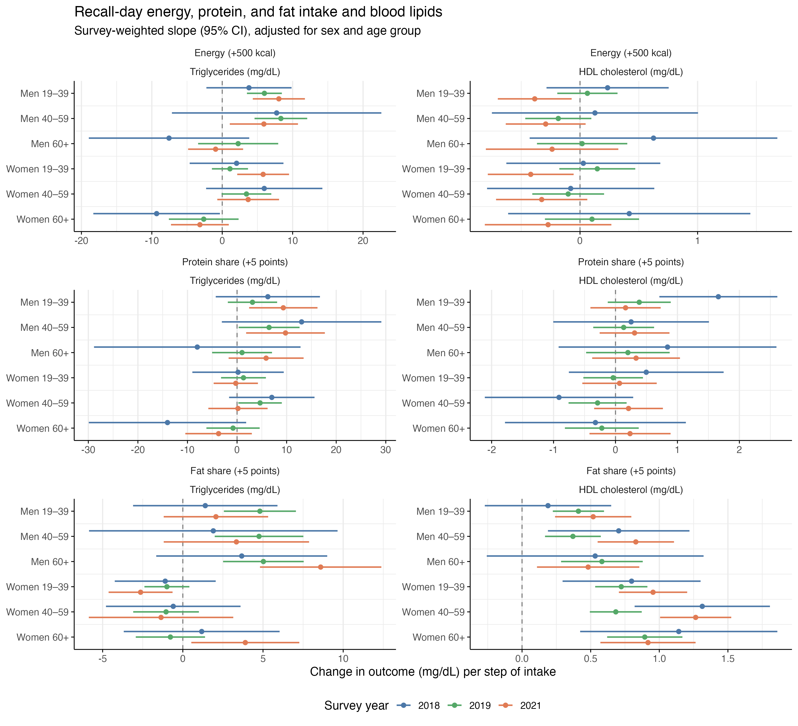
The bottom-right panel carries the main lipid finding: every group sits to the right of zero, in all three years. In the triglyceride panels, the filled dots cluster in men, while women sit near zero.
Among people with the same total energy, those whose energy came more from fat had slightly higher HDL, the protective type of cholesterol, in every group. Higher triglycerides with more food or more fat appeared in men, not in women.
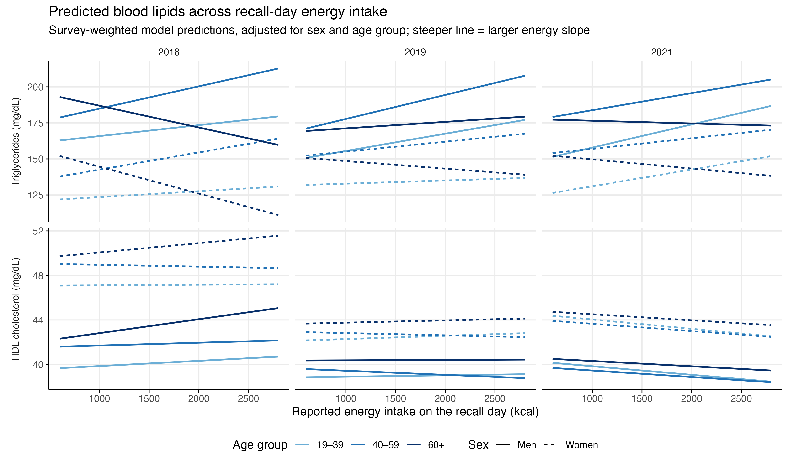
Survey-weighted results: adjusted for smoking and physical activity
Adding smoking and physical activity to every model changed the results very little, so the links in Tables 7–15 are not explained by these two habits. To check this, every model in Tables 7–15 (Model 1, adjusted for sex and age group) was fitted again with two more variables from the ENNS Clinical and Health component: smoking status (never, current, former) and physical activity (meets the WHO target of at least 150 minutes of moderate or 75 minutes of vigorous activity a week, or not). This is Model 2. Both models were fitted on the same adults, those with smoking and physical activity recorded (for BMI: 39,676 of 40,705 in 2018, 41,852 of 42,483 in 2019, and 37,666 of 37,854 in 2021), so any change comes from the adjustment and not from a different sample. Socioeconomic position, such as education, was not adjusted for, because it was outside the planned scope (Scope and limitations); this is a limitation.
Table 16How much did the slopes change after adding smoking and physical activity?Each row covers 18 slopes (6 sex and age groups × 3 years) and 6 tests of whether the slope differs by sex or age group (2 tests × 3 years). Typical change = the median change in a slope between Model 1 and Model 2, ignoring direction. A large percentage can appear when a slope is close to zero, so read it with the next two columns.
| Outcome | Exposure | Typical change in slope | Slopes with CI excluding 0 (Model 1 → Model 2) | Sex/age tests with the same conclusion |
|---|---|---|---|---|
| BMI | Energy +500 kcal | 2.6% | 18 of 18 → 18 of 18 | 6 of 6 |
| Protein +5 pts | 3.2% | 18 of 18 → 18 of 18 | 6 of 6 | |
| Fat +5 pts | 3.8% | 16 of 18 → 16 of 18 | 6 of 6 | |
| WHtR | Energy +500 kcal | 3.4% | 18 of 18 → 18 of 18 | 5 of 6 |
| Protein +5 pts | 3.2% | 17 of 18 → 16 of 18 | 5 of 6 | |
| Fat +5 pts | 4.1% | 16 of 18 → 15 of 18 | 6 of 6 | |
| SBP | Energy +500 kcal | 2.9% | 9 of 18 → 9 of 18 | 6 of 6 |
| Protein +5 pts | 1.9% | 6 of 18 → 6 of 18 | 6 of 6 | |
| Fat +5 pts | 1.7% | 7 of 18 → 7 of 18 | 6 of 6 | |
| DBP | Energy +500 kcal | 3.8% | 6 of 18 → 6 of 18 | 5 of 6 |
| Protein +5 pts | 2.0% | 5 of 18 → 5 of 18 | 6 of 6 | |
| Fat +5 pts | 1.6% | 10 of 18 → 10 of 18 | 6 of 6 | |
| FBS | Energy +500 kcal | 4.3% | 8 of 18 → 6 of 18 | 6 of 6 |
| Protein +5 pts | 3.6% | 4 of 18 → 4 of 18 | 6 of 6 | |
| Fat +5 pts | 7.3% | 11 of 18 → 11 of 18 | 6 of 6 | |
| Triglycerides | Energy +500 kcal | 3.1% | 6 of 18 → 6 of 18 | 6 of 6 |
| Protein +5 pts | 6.0% | 4 of 18 → 4 of 18 | 6 of 6 | |
| Fat +5 pts | 3.5% | 6 of 18 → 6 of 18 | 6 of 6 | |
| HDL cholesterol | Energy +500 kcal | 5.9% | 2 of 18 → 2 of 18 | 6 of 6 |
| Protein +5 pts | 4.8% | 1 of 18 → 1 of 18 | 6 of 6 | |
| Fat +5 pts | 1.0% | 16 of 18 → 16 of 18 | 6 of 6 |
Adding smoking and physical activity moved a typical slope by only 1–7%. Of 378 slopes, 4 changed from an interval that excludes zero to one that includes zero, and all 4 were borderline: the energy slope for FBS in women 60+ in 2019 and 2021 (lower limits moved from 0.02 and 0.06 to −0.09 and −0.07), and two WHtR protein or fat slopes in women whose lower limits were already at zero. Of 126 tests of sex and age differences, 3 changed conclusion, all with p-values close to 0.05 in both models (for example 0.042 → 0.079). So the answer to the research question does not depend on smoking or physical activity: recall-day intake was linked to BMI, WHtR, blood pressure, FBS, triglycerides, and HDL in the same ways, and the differences by sex and age group remained. The small shifts went one way: energy slopes for BMI and WHtR in young men rose slightly (by 3–10%), and those in adults 60+ fell slightly (by 1–7%). Active young men reported more food but were leaner, which slightly hid the link in Model 1; part of the steeper slope in older adults reflects differences in smoking or activity, but most of it remains.
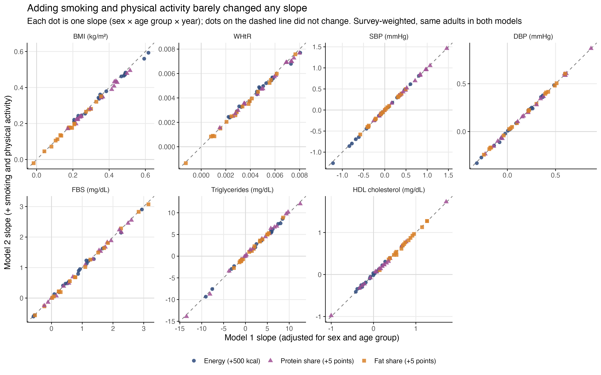
Summary of results
Table 17Summary of results: how recall-day intake relates to each MASLD-related risk factor.Each cell summarizes the survey-weighted slopes in Tables 8–15 across the six sex and age groups and three survey years. "+" means the outcome was higher with more intake, "−" means it was lower, and "≈ 0" means no clear link. The last two columns say whether the link differs by sex or age group (Tables 9, 10, 12, and 14) and whether it holds after adding smoking and physical activity (Model 2, Table 16).
| Outcome | Energy (+500 kcal) | Protein share (+5 points) | Fat share (+5 points) | Differs by sex or age group? | Same after smoking and physical activity? |
|---|---|---|---|---|---|
| BMI | + in every group and year (0.20–0.63 kg/m²); steepest in adults 60+ | + in every group; about twice as large in men | + in most groups; larger in men | Energy: by age (2018, 2019). Protein and fat: by sex | Yes |
| WHtR | + in every group and year; steepest in adults 60+ | + in nearly every group; larger in men | + in most groups; larger in men | Energy: by age (2019; borderline 2018). Protein and fat: by sex | Yes |
| SBP | + in young men (0.5–0.8 mmHg); − in women 40+ (0.4–1.2 mmHg) | + in men under 60 (about 1 mmHg) | − in women 19–39; + in men 40–59 in some years | Energy: by age (all years) and sex (2019, 2021). Fat: by sex | Yes |
| DBP | + in young men (about 0.4 mmHg); slightly − in women 40–59 | + in men in some years | + in men under 60 (0.3–0.6 mmHg); ≈ 0 in women | Energy and fat: by sex | Yes |
| FBS | Small + in 2019 and 2021 (0.2–2.9 mg/dL); wide intervals | Mostly ≈ 0 | + in adults 60+ in 2019 and 2021 (about 3 mg/dL in men) | Fat: by sex and by age (2019, 2021) | Mostly; the energy slope in women 60+ became uncertain |
| Triglycerides | + in men under 60 (6–8 mg/dL, 2019 and 2021); ≈ 0 or − in adults 60+ | + in men 40–59 (2019, 2021) | + in men; ≈ 0 in women | Energy: by age (2018, 2021). Fat: by sex (2019, 2021) | Yes |
| HDL cholesterol | ≈ 0 | ≈ 0 | + in every group (0.4–1.3 mg/dL) | Fat: by sex (stronger in women) | Yes |
For question 1, recall-day intake was linked to every MASLD-related risk factor studied, but not in the same way. Total energy went most clearly with body size: adults who reported more food had a higher BMI and waist-to-height ratio in every group, most steeply in adults 60+. Energy went with higher blood pressure and triglycerides in younger men but not in older adults, and it had little link with FBS and none with HDL. Moving energy from carbohydrate to protein or fat went with larger body size, more so in men, and a higher fat share went with higher HDL in every group. For question 2, the answer is yes: the links differ by sex (mainly for protein and fat share and blood pressure) and by age group (mainly for energy, body size, and triglycerides). For question 3, the answer is also yes: adding smoking and physical activity moved a typical slope by only 1–7%, and the sex and age differences remained (Table 16).
Discussion
Main findings
Among Filipino adults in the ENNS 2018, 2019, and 2021, recall-day dietary intake was associated with all six MASLD-related cardiometabolic risk factors, and the associations differed by sex and age group. The most consistent findings were that more reported energy went with larger body size in every group, most steeply in adults 60+, and that a higher share of energy from fat, in place of carbohydrate, went with higher HDL cholesterol in every group. These patterns repeated across the three survey years and did not change when smoking and physical activity were taken into account.
Comparison with other studies
Energy and body size. The link between reported energy and BMI was clear on average but weak for individuals (Figures 5–6). This fits what is known about dietary recalls: in a study of adults of African descent in five countries that checked 24-hour recalls against measured energy use, adults with a higher BMI under-reported their intake more, and the error grew with BMI [9]. If heavier adults in the ENNS also under-reported, the slopes here are flatter than the true link between usual intake and body size.
Fat, carbohydrate, and blood lipids. In the Prospective Urban Rural Epidemiology (PURE) study of 18 countries, higher carbohydrate intake went with lower HDL and higher triglycerides, and higher fat intake went with higher HDL and lower triglycerides [10]. Controlled feeding trials also found that replacing fat with carbohydrate raises fasting triglycerides [11]. The HDL result here agrees: in every sex and age group, a higher fat share in place of carbohydrate went with higher HDL. The triglyceride result only partly agrees: in women the fat slopes were close to zero, but in men a higher fat share went with higher triglycerides. Carbohydrate supplied about three-quarters of recall-day energy in this sample (Table 2), so these comparisons start from a very high-carbohydrate diet, and the type of fat-rich foods eaten may matter more than the share of fat itself.
Blood pressure. In PURE, higher intakes of total fat and carbohydrate both went with higher blood pressure [10]. Here, more energy went with higher blood pressure in young men but with lower blood pressure in women 40+. Because each adult was measured once, the negative slopes may reflect people with high blood pressure who had already changed their diet, or differences in reporting, rather than a protective effect of eating more.
Table 18Key findings compared with other studies.Each row pairs one finding from this study with what the cited studies found, and what the comparison may mean.
| Finding in this study | Agrees with other studies? | What other studies found | What it may mean |
|---|---|---|---|
| More reported energy went with higher BMI and WHtR in every group, but weakly | Partly | Adults with a higher BMI under-report their intake more, and the error grows with BMI [9] | The link between usual intake and body size is probably stronger than recall-day intake can show |
| A higher fat share, in place of carbohydrate, went with higher HDL in every group | Yes | Higher fat intake went with higher HDL, and higher carbohydrate intake with lower HDL, across 18 countries [10] | The HDL pattern holds even in this very high-carbohydrate population |
| A higher fat share went with higher triglycerides in men, not in women | No | Higher fat intake went with lower triglycerides [10], and replacing fat with carbohydrate raised triglycerides in feeding trials [11] | May reflect the kinds of fat-rich foods men eat or other differences between men who report more fat; this needs checking with more detailed diet data |
| More energy went with higher blood pressure in young men but lower in older women | Partly | Higher fat and carbohydrate intakes both went with higher blood pressure [10] | The negative slopes in older women more likely reflect diet changes after high blood pressure, or reporting, than a protective effect |
The HDL finding matches large international data, which makes it the most trustworthy result. The body-size and blood-pressure findings fit known problems with recall-based intake and one-time measurements. The triglyceride finding in men goes against other studies and should be treated as a question for future work, not a conclusion.
What the findings mean for MASLD prevention
Current European guidelines advise lifestyle change, including weight loss, dietary changes, and physical activity, for adults with MASLD [12]. The results here show where diet and the MASLD risk factors meet in Filipino adults: total energy with body size in every group, and the balance of fat and carbohydrate with blood lipids, with different patterns for men, women, and older adults. Because the study is cross-sectional and uses recall-day intake, these results point to groups and nutrients worth targeting in prevention research and nutrition programs; they do not show that changing diet would change the risk factors.
Strengths
The study used a large, nationally sampled survey with diet, body measurements, and blood tests in the same adults, analyzed with the survey design in three separate years. Its seven outcomes cover all five cardiometabolic criteria in the MASLD definition [1], and the main results were checked for the influence of smoking and physical activity on the same adults.
Limitations
1. Recall-day intake, not usual intake. Diet came from the 24-hour recall as one intake value per person, and the documentation does not say whether that value covers one recall day or both (Recommendation 1); either way it describes the recall day rather than usual intake, and it is open to under-reporting; a quarter of adults reported less than about 1,060 kcal (Figure 3). What this means: Day-to-day variation in what people eat usually makes slopes smaller than they would be with usual intake, so the links found here are more likely understated than overstated. The results describe recall-day intake, not habitual diet.
2. One measurement in time. Each adult was measured once, so the study cannot tell whether diet came before the risk factor or the other way around. What this means: A slope shows that two things go together, not that one causes the other. For example, older women with high blood pressure may already have been eating less, which can produce the negative slopes in Table 11B.
3. No liver measurement. The ENNS did not image the liver, so MASLD itself could not be identified. What this means: The study is about the risk factors that define MASLD, not about the disease. It cannot say how many adults have MASLD.
4. No adjustment for socioeconomic position. Education, income, and other socioeconomic factors were not included; the socio-economic file was used only for sex and age, and the adjusted model focuses on health-related behaviors (smoking and physical activity). What this means: Part of a link between diet and a risk factor could reflect income, type of work, or food access rather than diet itself.
5. Lipid units assumed. The codebook gives no units for triglycerides and HDL; mg/dL was assumed because the values fit that unit. What this means: If the units were different, the sizes of the lipid slopes would change, but their directions and the sex and age patterns would not.
6. Smaller samples for blood tests. FBS was available for 68,569 adults and lipids for about 39,300; lipids covered only 5,172 adults in 2018, and FBS was missing for 71% of adults in 2021, with partial area coverage. What this means: FBS and lipid results are less precise, with wider intervals, and depend on the survey weights to represent the population. Results from 2018 lipids and 2021 FBS deserve the least weight.
7. Years analyzed separately. The provincial weights needed to combine survey years were not available, so no pooled estimate was made. What this means: The study can show whether a pattern repeats across years, but it cannot formally test whether a link changed over time.
8. Survey design assumptions. FNRI does not state the exact variance method, so strata by province or HUC with PSUs nested within province were assumed. What this means: Standard errors and confidence intervals could be slightly off if FNRI's own design differs; the slopes themselves would not change.
9. Group slopes assume that sex and age add up. The models let the slope differ by sex and by age group, but not by their combination. What this means: A slope for women 60+ is built from a "women" part and a "60+" part. If older women differ in a way that is not just the sum of the two, their slope is an approximation.
10. Many tests. Hundreds of slopes and tests were calculated. What this means: Some p-values below 0.05 will appear by chance, so single results matter less than patterns that repeat across years.
11. Swaps, not single nutrients. Protein and fat slopes compare more protein or fat with less carbohydrate at the same total energy. What this means: These results cannot say whether the link comes from more of one nutrient or less of the other.
12. Skewed triglycerides. Triglycerides were analyzed as raw values in mg/dL, and a few adults had very high values (up to 3,522 mg/dL). What this means: A few extreme values can pull triglyceride slopes up or down, so their sizes are less certain than their directions.
Conclusion
Among Filipino adults in the ENNS 2018, 2019, and 2021, recall-day dietary intake was associated with every MASLD-related cardiometabolic risk factor studied, and the associations differed by sex and age group. Adults who reported more energy had a higher BMI and waist-to-height ratio in every group, most steeply those aged 60 and older, while higher blood pressure and triglycerides with more energy appeared in younger men but not in older adults. A higher share of energy from protein or fat, in place of carbohydrate, went with larger body size, more so in men, and a higher fat share went with higher HDL cholesterol in every group. These patterns repeated across survey years and were not explained by smoking or physical activity. Because they come from recall-day intake measured at one visit, they describe associations, not causes, and they show where future studies of usual diet and MASLD in the Philippines should look.
Recommendations
These recommendations come from the limits this study ran into. The first group is for the ENNS itself; the second is for bodies that can fund or run studies the ENNS was not designed to do.
For the ENNS and DOST-FNRI
1. State which recall day the intake values come from, and release both days. The ENNS collected a second, non-consecutive 24-hour recall in a random half of households, and FNRI used it to estimate usual intake with the Iowa State University (ISU) method in the PC-SIDE software [6]. The public use file used here has one intake value per person, and its documentation does not say whether that value is the first recall day or a combination of both days. The documentation should say so, and the second-day records should be released as separate records, so that researchers can estimate usual intake the same way FNRI does (Limitation 1).
2. Add a blood sugar measure that reflects more than one day. Fasting blood sugar came from one blood draw per person [6]. Adding glycated hemoglobin (HbA1c), which reflects blood sugar over the past few months, would give a steadier measure than a single fasting value.
3. Collect fasting blood sugar and the full lipid profile in every sampled province. In the ENNS, fasting blood sugar and the lipid profile (total cholesterol, triglycerides, HDL, and low-density lipoprotein [LDL] cholesterol) were collected in only half of the target households, the lipid profile in only 54 provinces and HUCs, and coverage was partial in 2018 and 2021 [6]. If the budget cannot cover every household, a smaller random subsample in every province would still cover all areas and years, which would make the blood-test results as dependable as those for body size and blood pressure (Limitation 6).
4. Publish complete documentation with the public use files. The documentation should give units for every laboratory value (triglycerides and HDL had none), and the exact variance method, and the provincial weights needed to pool survey years should be released with the files (Limitations 5, 7, and 8).
For health research institutions and funders
5. Build a nationally representative adult cohort with repeated diet and blood measurements. The National Nutrition Survey, including the ENNS, is cross-sectional: each round draws a new sample, and each adult is measured once [6, 13]. Philippine cohorts that follow adults over time do exist, but none covers the whole adult population. The LIFE course study in CARdiovascular disease Epidemiology (LIFECARE) recruited about 3,070 adults aged 18–50 in Metro Manila and four nearby Luzon provinces, measuring body size, blood pressure, fasting glucose, and lipids, with a follow-up visit about four to five years later [14, 15]. The PURE study enrolled about 4,500 adults aged 35–70 in the Philippines [16]. The Cebu Longitudinal Health and Nutrition Survey covers Metro Cebu [17], and the Longitudinal Study of Ageing and Health in the Philippines is national but limited to adults aged 60 and older, with no blood tests listed [18]. These cohorts can answer regional questions, but none can be used to study, or adjust results for, the whole Filipino adult population. They are also not public use files: access goes through the study teams (for LIFECARE, by formal application [14]), which helps protect participants' privacy and data quality but limits use by outside researchers. A nationally representative adult cohort, with repeated diet recalls, body measurements, and blood tests, would let studies like this one follow the same people over time and apply the results to all regions. Health research funders and institutions, such as the Department of Health or the Philippine Council for Health Research and Development, are the bodies that could support one.
6. Add a low-cost measure of fatty liver. MASLD may be becoming a national concern [3], but liver imaging in a national survey may not be affordable. A cheaper first step is to add gamma-glutamyl transferase (GGT), a routine liver blood test, to surveys that already measure BMI, waist, and triglycerides: these four values make up the Fatty Liver Index, a score developed to detect fatty liver in the general population [5]. Liver ultrasound could then be done in a small subsample, when funds allow, to check how well the score works in Filipino adults.
For future research
7. Look at food groups and the sources of fat. In men, a higher fat share went with higher triglycerides, which goes against other studies (Table 18). The dietary public use file already gives intake by food group, including fats and oils (cooking oil, coconut, lard, butter, and margarine), fish and meat, and cereals such as rice [6]. Analyses by food group could show which foods are behind this pattern. The type of fat (for example, saturated or unsaturated) is not in the public file, so it would need the full dietary data.
8. Repeat the triglyceride analysis on a log scale. This study kept triglycerides in mg/dL, like every other outcome, so that each slope reads directly in clinical units and can be compared with cut-offs such as 150 mg/dL; with about 39,000 adults, a straight-line model still estimates differences in average triglycerides well. Triglycerides are strongly skewed, however (median 133 mg/dL, highest 3,522 mg/dL), so a few very high values can pull the slopes (Limitation 12). Repeating the models with log-transformed triglycerides, where each slope becomes a percentage difference, would show whether the sex and age patterns hold.
9. Adjust for socioeconomic position. This study did not adjust for education or income (Limitation 4). Future analyses can take education from the ENNS socio-economic file, grouping its codes with that file's codebook, and add it as an adjustment variable only, with neutral labels (for example, "completed elementary or less" rather than "low"), the largest group as the comparison, and Model 1 and the adjusted model shown side by side, so that it describes circumstances rather than judging people.
10. Measure how common MASLD is in a population-based study. No community-based or national study of MASLD or NAFLD prevalence in Filipino adults was found. The Philippine figures available come from a hospital records review [4], a study that graded fatty liver in 100 patients at a wellness clinic [19], and modeled estimates of MASLD deaths [3]. A population-based study with liver ultrasound, or with the Fatty Liver Index checked against ultrasound in a subsample (Recommendation 6), would show how common MASLD is and how closely it follows the risk factors studied here.
References
[1] Rinella ME, Lazarus JV, Ratziu V, et al. A multisociety Delphi consensus statement on new fatty liver disease nomenclature. J Hepatol. 2023;79(6):1542–1556. doi:10.1016/j.jhep.2023.06.003
[2] Li J, Zou B, Yeo YH, et al. Prevalence, incidence, and outcome of non-alcoholic fatty liver disease in Asia, 1999–2019: a systematic review and meta-analysis. Lancet Gastroenterol Hepatol. 2019;4(5):389–398. doi:10.1016/S2468-1253(19)30039-1
[3] Ge Q, Lin Y, Wang M, et al. The burden of nonmalignant metabolic dysfunction-associated steatotic liver disease in the Western Pacific Region: a systematic analysis from 1990 to 2021. Food Sci Nutr. 2025;13(7):e70627. doi:10.1002/fsn3.70627
[4] De Lusong MA, Labio E, Daez L, Gloria V. Non-alcoholic fatty liver disease in the Philippines: comparable with other nations? World J Gastroenterol. 2008;14(6):913–917. doi:10.3748/wjg.14.913
[5] Bedogni G, Bellentani S, Miglioli L, et al. The Fatty Liver Index: a simple and accurate predictor of hepatic steatosis in the general population. BMC Gastroenterol. 2006;6:33. doi:10.1186/1471-230X-6-33
[6] Department of Science and Technology – Food and Nutrition Research Institute (DOST-FNRI). Expanded National Nutrition Survey public use file documentation: Dietary, Anthropometry, and Clinical and Health components (2018, 2019, 2021). Taguig City: DOST-FNRI.
[7] Republic of the Philippines. Expanded Senior Citizens Act of 2010 (Republic Act No. 9994). 2010. lawphil.net (accessed 18 October 2026).
[8] Alberti KG, Eckel RH, Grundy SM, et al. Harmonizing the metabolic syndrome: a joint interim statement of the International Diabetes Federation Task Force on Epidemiology and Prevention; National Heart, Lung, and Blood Institute; American Heart Association; World Heart Federation; International Atherosclerosis Society; and International Association for the Study of Obesity. Circulation. 2009;120(16):1640–1645. doi:10.1161/CIRCULATIONAHA.109.192644
[9] Orcholski L, Luke A, Plange-Rhule J, et al. Under-reporting of dietary energy intake in five populations of the African diaspora. Br J Nutr. 2015;113(3):464–472. doi:10.1017/S000711451400405X
[10] Mente A, Dehghan M, Rangarajan S, et al. Association of dietary nutrients with blood lipids and blood pressure in 18 countries: a cross-sectional analysis from the PURE study. Lancet Diabetes Endocrinol. 2017;5(10):774–787. doi:10.1016/S2213-8587(17)30283-8
[11] Mensink RP, Zock PL, Kester AD, Katan MB. Effects of dietary fatty acids and carbohydrates on the ratio of serum total to HDL cholesterol and on serum lipids and apolipoproteins: a meta-analysis of 60 controlled trials. Am J Clin Nutr. 2003;77(5):1146–1155. doi:10.1093/ajcn/77.5.1146
[12] European Association for the Study of the Liver (EASL), European Association for the Study of Diabetes (EASD), European Association for the Study of Obesity (EASO). EASL-EASD-EASO Clinical Practice Guidelines on the management of metabolic dysfunction-associated steatotic liver disease (MASLD). J Hepatol. 2024;81(3):492–542. doi:10.1016/j.jhep.2024.04.031
[13] Patalen CF, Ikeda N, Angeles-Agdeppa I, et al. Data Resource Profile: The Philippine National Nutrition Survey (NNS). Int J Epidemiol. 2020;49(3):742–743f. doi:10.1093/ije/dyaa045
[14] Shafiq M, Fong AYY, Tai ES, et al. Cohort Profile: LIFE course study in CARdiovascular disease Epidemiology (LIFECARE). Int J Epidemiol. 2018;47(5):1399–1400. doi:10.1093/ije/dyy168
[15] Llanes EJB, Sison OT, Punzalan FER, et al. Incidence and associated risk factors of hypertension among apparently healthy adult Filipinos in the LIFECARE Philippine cohort study. Acta Med Philipp. Published online August 29, 2025. doi:10.47895/amp.vi0.11167
[16] Khetan AK, Palileo-Villanueva LM, Mat-Nasir N, et al. Mortality, cardiovascular disease, and their associations with risk factors in Southeast Asia: a PURE substudy. JACC Asia. 2024;4(8):624–633. doi:10.1016/j.jacasi.2024.05.008
[17] Cebu Longitudinal Health and Nutrition Survey. About the study. Carolina Population Center, University of North Carolina at Chapel Hill. cebu.cpc.unc.edu/about (accessed 18 October 2026).
[18] Demographic Research and Development Foundation (DRDF). Longitudinal Study of Ageing and Health in the Philippines. drdf.org.ph (accessed 18 October 2026).
[19] Cuenza LR, Razon TLJ, Dayrit JC. Correlation between severity of ultrasonographic nonalcoholic fatty liver disease and cardiometabolic risk among Filipino wellness patients. J Cardiovasc Thorac Res. 2017;9(2):85–89. doi:10.15171/jcvtr.2017.14